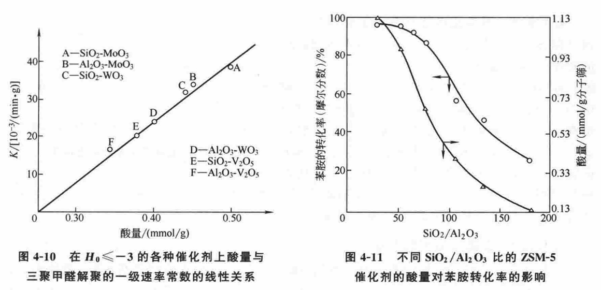

工业催化（笔记）
第一章 工业催化发展概述
催化概念历史悠久，催化研究与社会发展需求相适应,实际应用中追求低廉高效催化剂
当下催化反应追求目标：“原子经济”和“零排放”，“绿色化的”
研究方向的选择要与实际相结合
实验中出现的意外结果也要关注
在原有研究基础上进行新地探索，技术的创新
RaneyNi催化剂
白土催化剂
BET法测定原理
费-托(F-T)合成
流化床催化裂化工艺(FCC)
模拟计算：热力学计算和动力学计算 DFT计算，VASP软件
高通量筛选 (HTS)
高真空（HV）、超高真空（UHV）和极高真空（XHV）
扫描隧道显微镜STM、激光和频（SFG）
高级（扫描）透射电子显微镜 (S)TEM 已成为所有前沿晶片制造工作流程的必要部分。
模型催化剂
催化反应的激活手段
超分子催化或称为主体-客体催化(Host-Guest-Catalysis)
单原子催化剂
第二章 固体催化剂的结构基础
2.1 固体中键合的结构类型
离子固体
阴阳离子静电作用
固体熔点极高，因为要克服正负离子间极强的作用力，
重要参数：晶格能，取决于离子大小、电荷，可定量计算
溶解于极性溶剂，如H2O，极性溶剂有极化作用，削弱离子晶体中的离子键，导致晶体溶解。
金属固体
高传热、导电物性、可煅打、可塑性、延韧性
由于离子化能低，易被腐蚀氧化
Hg液体是由其原子的构型决定，相对于其他金属的价电子较少共用而离域化，是仅有的未形成气态双原子分子金属，其原子不能填充形成固态晶格
自由电子模型的键合最简单，电子能带模型更为全面
共价网络固体
其构成的原子间形成极强方向的共价键，因而高熔点、形成块状坚硬固体
不同原子排列的异构体具有不同的物理性质
分子固体
通过较弱的分子间力结合，如色散力、诱导力、取向力、氢键等，因而以低熔点为特征
2.2 晶体结构
2.2.1 晶格、晶面及其标记
结晶体
点阵结构的物质，固体中的所有原子或分子都有规则的几何排列或周期性。高度有序。
空间点阵划分为平行六面体的晶格
格点(Lattice site): 表示基元的点。

2.2.2 填充分数（Xi）
Xi def：晶胞中原子所占的体积分数
反映了晶体结构的体相面貌，Xi随晶体的取向变化
2.2.3 表面层外气-固届层的结构
吸附层结构的标志可以与固体表面不一致，表明吸附层与固体表面层可能不具有结构有序化周期性
也可能二者一致，即吸附层的晶胞结构与固体的晶胞结构相同
现在一致认为在表面上被吸附的分子以六方密堆的方式排列
2.2.4 体相和表相结构的不完整性
实际的晶体结构存在多种不完整性，有点缺陷、线缺陷、面缺陷，这些缺陷导致了晶体的许多不同性能。 资料
2.3 分子表面化学
表面分子与内部分子所受作用力不同，即受本相内分子的作用，又受不同相向中分子的作用，因此表面的性质与内部不同。
表面迁移是控制晶体生长的一个重要参数。当沉积在表面上的原子、分子很容易迁移时，会在最合适的晶体位置形成表面分子膜，可以通过STM观察。表面分子膜可以用来进行多项对于表面过程研究。
2.3.1 洁净固体表面的集合结构特征
表面在原子水平上不均匀，在平面上存在台阶、梯步、拐折以及空位、吸附质等。从催化角度，这些都是活性较高部位。因而原子在表面上扩散迁移所需的活化能较之在体相中迁移要低，相应的速率要快。 
但是，研究表明，表面规整结构单元承担了催化活性主体，表面缺陷只在特定条件下具有一定作用。且简单的Miller（hkl）指数不适用此种情况，处理起来复杂。利用晶体学的原理同样可以处理此情况。
2.3.2 洁净固体表面的驰豫和重构
弛豫(relaxation)、重构(reconstruction)和表面组成变化 诱导的弛豫或重构——结晶固体表面几种重要的结构变化。
弛豫
重构

2.3.3 吸附单分子层的有序化膜
吸附热ΔH越大，分子滞留在表面上的时间越长，表面被覆盖的越多。当停留的时间足够长，且ΔH与体相扩散活化能足够高到与KT（≥kT）相比较时， 定位于特定活性位上的表面分子可能沿表面滑动。——吸附单层表面有序化
吸附单层表面有序化主要取决于能垒的深度
真实的表面不可能完整有序化，在吸附层中某些位错形成吸附粒子簇状物孤岛。孤岛形成时，覆盖度较低，要使覆盖度增加，使单层有序化成为可能，必须降低温度。
吸附有机分子的有字化和取向，对于黏结、润滑和烃类的催化反应等都具有重要作用。
溢流
多相催化剂的制备紧密关联到活性组分在载体表面上的分散状态
2.4 固体能带结构简介
第三章 吸附与多相催化
工业上实现化学反应，要求单位时间内能够获得足够数量的产品。提高反应速率的手段有多种，其中，催化既能提高反应速率，又能对反应方向进行控制，且原则上催化剂不消耗。
3.1 催化作用与催化剂
3.1.1 催化作用的定义与特征
定义： 催化剂是一种在不改变反应总标准吉布斯自由能变化的情况下提高反应速率的物质。这种作用称为催化作用，设计催化剂的反应成为催化反应。

特征：
催化剂只能加速热力学上能进行的反应，不能加速热力学上无法进行的反应。
催化剂只能加速反应趋于平衡，而不能改变平衡的位置(平衡常数Kf)。对于给定的反应，在已知条件下，其催化和非催化过程的ΔGr值是相同的，即Kf值是相同的。
按平衡常数计算，可得到理论产率或平衡产率，在除催化剂以外其他条件不变情况下是不变的。
催化剂不能改变平衡常数Kf的数值，因此必然以相同的比例加速逆反应的速率。因此，对于可逆反应，能够催化正向反应的催化剂也应该能够催化逆向反应。因此，当正向反应难以研究时，可以通过研究催化逆向反应来了解。
催化剂对反应具有选择性。
当反应具有多个可能的方向时，催化剂只加速其中一种，促进反应速率和选择性是一致的。
利用不同的催化剂，可以使反应有选择性地朝向所需的方向进行，生成所需的产物。
催化剂具有一定的寿命。
催化剂能够改变化学反应的速率，但不会进入反应的产物。
催化剂会先与反应物生成活性中间体，然后再生成产物并恢复成原来的状态。因此，一定量的催化剂可以使大量的反应物转化为产物。
但是，长期受热和化学作用会导致催化剂活性下降，最终失活。
催化剂的失活是由于物理和化学变化，如晶相变化、晶粒分散度变化、易挥发组分的流失、易熔物的熔融等。这些过程使催化剂的活性降低，最终导致失活。
因此，催化剂的活性、选择性和稳定性是重要的催化指标。从工业生产的角度来看，选择性和稳定性比活性更为重要。对于新开发的工艺和催化剂，首先追求高活性，其次是高选择性，最后是稳定性。
3.1.2 催化剂的组成与载体的功能
催化剂的组成 工业催化剂由多种物质组成，绝大多数工业催化剂的组分可以区分为三类：活性组分、载体、助催化剂。
载体的功能 (1)提供有效的表面和适宜的孔结构
因为宏观结构常由载体决定。
(2)增强催化剂的机械强度，使催化剂具有一定的形状
通过载体的选择和设计满足工业催化剂对其机械强度的要求。 机械强度，是指其抗磨损、抗冲击、抗重力、抗压和适应温变、相变的能力。
(3)改善催化剂的传导性
为了适应工业上强放(吸)热反应的需要，载体一般应具有较大的比热容和良好的导热性，使反应热能迅速传递出(进)去，避免局部过热而引起催化剂的烧结和失活或设备损坏，还可以避免高温下的副反应，从而提高催化剂的选择性。
(4)减少活性组分的含量
使用贵金属(如 Pt、Pd、Rh 等)催化剂时采用载体将活性组分高度分散，减少用量，具有重要意义。
(5) 载体提供附加的活性中心
一般情况下，载体是无催化活性的，以避免导致不必要的副反应,如对于高熔点、低比表面积的载体。
然而，对γ-A120;这类载体，其表面同时存在不同性质的酸活性中心，如在制备时不加以处理，就有诱发不期望的副反应的可能。但有时，载体的这种附加活性中心却能促使目的反应朝有利的方向进行。
(6) 活性组分与载体之间的溢流现象和强相互作用
溢流现象，是指固体催化剂表面的活性中心(原有的活性中心)经吸附产生出一种离子的或自由基的活性物种，它们迁移到其他活性中心上(次级活性中心)的现象。它们可以化学吸附诱导出新的活性或进行某种化学反应。如果没有原有的活性中心，这种次级活性中心不可能产生出有意义的活性物种，这就是溢流现象。
从溢流现象研究中得知，催化加氢的活性物种不只是 H，而应是 H·、H+、H2、H-等的平衡组成;催化氧化的活性物种不只是 O，而应是 O·、0-、02-和O2,等的平衡组成。
氢溢流现象的研究，发现了另一类重要的作用，即金属、载体间的强相互作用，常简称为 SMSI(strong metal support interaction)效应。当金属负载于可还原的金属氧化物载体上时，在高温下还原导致金属对H2的化学吸附和反应能力的降低。这是由于可(如 TiO2)还原的载体与金属间发生了强相互作用，载体将部分电子传递给金属，从而减少了对Hz的化学吸附能力。
3.1.3 对工业催化剂的要求
三方面的基本要求，即活性、选择性和稳定性或者说寿命)。
此外，还需环境友好的，反应剩余物是与生态相容的。
活性和选择性指标
活性是指催化剂影响反应进程变化的程度。
选择性指标：对于固体催化剂，工业上常采用给定温度下完成原料的转化率来表达，原料转化率的百分数越大，活性越高;
也可以用完成给定的转化率所需的温度表达，温度越低，活性越高;
还可以用完成给定的转化率所需的空速表达，空速越高，活性越高; 也有用给定条件下目的产物的时空收率来衡量的。
在催化反应动力学的研究中，活性多用反应速率表达。
稳定性和寿命指标
(1)催化剂的稳定性，是指它的活性和选择性随时间变化的情况。
工业催化剂的稳定性，包括热稳定性、化学稳定性和机械稳定性三方面。
(2)工业催化剂的寿命，是指在工业生产条件下，催化剂的活性能够达到装置生产能力和原料消耗定额的允许使用时间;也可以是指活性下降后经再生活性又恢复的累计使用时间。
3.2 三个重要的催化概念
Arrhenius在19世纪80年代提出的反应能垒概念
Langmuir在20世纪20年代建立的表面吸附概念
Taylor等在20世纪20年代后期提出的活性中心概念
3.3 分子的化学吸附
3.3.1 吸附等温式
可以定量地表达固体催化剂(也是吸附剂)对气态反应物(吸附质)的吸附能力。
除吸附剂和吸附质的本性外，最重要的影响因素是温度和压力。
达到平衡时的气体吸附量称为平衡吸附量，它是吸附物系(包括吸附剂和吸附质)的性质、温度和压力的函数。
对于给定的物系，在温度恒定和达到平衡的条件下，吸附量与压力的关系称为吸附等温式或称吸附平衡式。绘制成的曲线称为吸附等温线。

吸附量V开始随p变化;当达到吸附饱和时，V=Vm，它与p无关。此Vm值对应于单分子饱和吸附层的形成。
简单的 Langmuir 吸附等温式


θ=V/Vm，则 
模型:吸附剂表面是均匀的;吸附的分子之间无相互作用;每个吸附分子占据一个吸附位，吸附是单分子层的。
遵循 Langmuir 等温式的吸附为理想吸附。

若以p/V对作图得一直线，由直线的斜率可求出单分子层形成的饱和吸附量Vm，由截距和V可求出平衡常数K。
解离吸附的 Langmuir 等温式
吸附时分子在表面发生解离：

解离吸附分子在表面上的覆盖分率与分压的平方根成正比。这一结论可用于判定所进行的吸附是否发生了解离吸附。
竞争吸附的 Langmuir 等温式
两种物质A和B的分子在同一吸附位上吸附，称为竞争吸附。这种吸附等温关系对于分析阻滞剂和两种反应物的表面反应动力学十分重要。
A、B都不发生解离时：

若有多种气体分子可在同一吸附剂的吸附位上发生竞争吸附，其中第i种分子的表面覆盖分率θi与其平衡分压力pi的关系可表示为：

非理想的吸附等温式
偏离 Langmuir 型的吸附谓之非理想吸附。偏离的原因可以是:表面的非均匀性;吸附分子之间有相互作用，一种物质分子吸附后使另一种分子于其邻近的吸附变得更容易或更困难;发生多层吸附。
最有影响的是Temknn 等温式和 Freundlich 等温式。
Temknn 等温式：

Freundlich 等温式：
吸附质蒸气压较高时此等温式不适用，其适用范围为θ在0.2~0.8。

BET公式

BET 等温式的建立是在 Langmuir 吸附理论基础上发展的，主要基于两点假定:!物理吸附借助于分子间力，被吸附的分子与气相分子之间仍有此种力，故可发生多层吸附，但第层吸附与以后多层吸附不同，后者与气体的凝聚相似，吸附达平衡时，每一吸附层上的蒸发速率必等于凝聚速率，故能对每层写出相应的吸附平衡式。
3.3.2 金属表面上的化学吸附
金属催化剂，制备成纯净的形式比较容易，也易于表征。
化学吸附研究用的金属表面
化学吸附是分子参与反应的前奏和重要步骤，其效应极类似于将分子激发到第一电子激发态，使化学吸附的分子有时更接近于将要转化成的产物分子。
用于金属化学吸附研究的试样主要有四类:金属丝，用电热处理易于使其表面清洁;金属薄膜，在高真空条件下将金属丝加热至其熔点，用冷凝蒸发出的金属原子制成;金属箔片，采用离子轰击使之洁净;金属单晶，应用最为普遍。许多金属的单晶可以做得很大，约 1cm”，将其切开，仅暴露某一特定的晶面，特别适合于分子化学吸附层结构的基础性研究。
金属表面上分子的吸附态
分子吸附在催化剂表面上，与其表面原子间形成吸附键，构成分子的吸附态。吸附键的类型可以是共价键、配位键或离子键。吸附态的形式有以下几种:
①某些分子在吸附之前先必须解离，因为很多这类分子不能直接与金属的“表面自由价”成键，必须先自身解离，成为有自由价的基团，如饱和烃分子、分子等。
② 具有孤对电子或"电子的分子，可以非解离化学吸附，通过相关的分子轨道的再杂化进行。
分子在金属上的活化及其吸附强度
在催化反应中，金属特别是过渡金属的重要功能之一，是能将双原子分子解离活化，为其他反应分子或反应中间物提供这些活化的原子。
金属对气体分子化学吸附强度的顺序为: O2>C2H2>C2H4>CO>H2>CO2>N2
强吸附的都是过渡金属，它们的价层都有一个以上的未配对电子(d电子或/和d空轨道);吸附能力较弱的都是非过渡金属，属于价层为s电子或p电子的金属。
各种金属解离吸附双原子分子的能力与它们形成相应的体相化合物的能力并行。为了定量地比较气体在各种金属表面上化学吸附的强度，可从实验中测量摩尔吸附热。
它是1mol物质从气态转变成化学吸附态所产生的焓变。对于无解离的分子吸附，这种焓变就是键焓，可以直接与相应的体相化合物的生成焓相联系，且可用不同的方法测定。最好采用多品金属膜进行。
金属表面上化学吸附的应用
金属负载型的催化剂和多组分的金属催化剂，常需借用气体化学吸附方法测量金属的表面积。常用的化学吸附气体是H2、CO、O2和NO。
金属的总表面积A:

除此之外，还可以用吸附-滴定法。
3.3.3 氧化物表面上的化学吸附
氧化物表面都含有两种类型的物种--阳离子和阴离子，而且它们的相对量及其空间排布随晶面变化;在同一吸附物中是否两类物种都参加不易确定。
氧化物的热稳定性彼此很不相同，位于过渡元素前的元素氧化物，即所谓陶瓷性的氧化物，高温稳定;而过渡金属及其后的元素氧化物，在真空条件下一般失氧，尤其是受热时更会如此。
很多实用性的氧化物催化剂多系二元以上的复合氧化物，其表面组成很难确定故对此种情况下的化学吸附研究要特别小心。
半导体氧化物上的化学吸附： 半导体氧化物的显著特点，是它的阳离子有可调变的氧化数，这种阳离子总是由过渡元素或稀土元素形成。吸附的发生，伴随着相当数量的电子在其表面与吸附质之间传递。当这些氧化物在空气中受热时，有的失去氧，阳离子化数降低，直至变成原子态。
绝缘体氧化物上的化学吸附： 因为绝缘体氧化物是属于化学计量关系的氧化物，这类氧化物的阳离子既不能氧化，也不能还原，所以不能用氧化物的氧化还原性来解释其化学吸附性能。由于这些氧化物自身的酸碱度可能差别很大，所以它们有的能够吸附酸性的吸附质。由于这些氧化物自身具有酸碱性，故它们都能与水及其他的极性分子反应。这种属性是它们能够负载金属离子，成为负载型催化剂载体的重要原因。它们自身也可以作为酸碱型的催化剂。
氧化物表面积的测定： 单一组分的氧化物，其总表面积可以用前述的物理吸附法测定;如果是多组分样品，欲测定其中某一组分(金属或氧化物)的比表面积，就要利用选择性吸附的办法测定特定组分的表面积。实验表明，这种吸附遵循Freundlich吸附等温式。
3.4 多相催化的反应步骤
多相催化反应过程中，从反应物到产物一般经历步骤：
反应物分子从气流中向催化剂表面和0孔内扩散;
反应物分子在催化剂内表面上吸附;
吸附的反应物分子在催化剂表面上相互作用或与气相分子作用进行化学反应;
反应产物自催化剂内表面脱附;
反应产物在孔内扩散并扩散到反应中去。

3.4.1 外扩散
在反应条件下，催化剂颗粒周围由反应物分子、产物分子和稀释剂分子等混合物组分形成一稳定的滞流层，一个反应物分子必须穿过此滞流层才能到达催化剂颗粒的外表面。
按照Fick定律，反应分子穿过此层的通量正比于浓度梯度：
通量=DE(ch一cs)
外扩散速率的大小及其施加的影响，与流体的流速、催化剂颗粒粒径以及传递介质的密度、黏度等有关。实际上仅根据气流线速和粒径就可以做出判断。
3.4.2 内扩散
当反应物分子到达催化剂颗粒外表面，经反应后尚未转化的部分，就会在外表面与内孔的任一点间出现第二种浓度差，穿过这种浓度梯度的过程，即所谓的内扩散，将反应分子带到内表面活性中心。
穿过的通量正比于第二种浓度差： 通量=Dl(cs-c)
由于催化反应经受着内、外扩散的限制，常使观测到的反应速率较之催化剂本征的反应速率要低，故存在一个效率因子（η）问题，将其定义为：

催化剂颗粒越大，内扩散限制越大。本征反应速率较大时，η就会变得很小。η因子定量地表达了催化剂内表面利用的程度。
3.4.3 反应物分子的化学吸附
当反应物分子通过扩散到达催化剂活性表面附近时，它们可能进行化学吸附，与活性表面相互作用产生新的化学物种。
催化中的吸附总是化学吸附。化学吸附本身是一个复杂的过程，分两步进行，即物理吸附和化学吸附。
吸附的发生需要活化能。化学吸附是反应分子活化的关键一步。化学吸附为单分子层吸附，具有饱和性。
发生化学吸附的原因，是由于位于固体表面的原子具有自由价，这些原子的配位数小于固体内原子的配位数，使得每个表面原子受到一种内向的净作用力，将扩散到其附近的气体分子吸附形成化学键。
3.3.4 表面反应
化学吸附的表面物种在二维的吸附层中并非静止不动的，只要温度足够高，它们就成为化学活性物种，在固体表面迁移，随之进行化学反应。
3.3.5 产物的脱附
脱附是吸附的逆过程，因此，遵循与吸附相同的规律。吸附的反应物和产物都有可能脱附。就产物来说，不希望在表面上吸附过强，否则会阻碍反应物分子接近表面，使活性中心得不到再生，成为催化剂的毒物。若目的产物是一种中间产物，则又希望它生成后迅速脱附，以避免分解或进一步反应。
第四章 固体催化剂及其催化作用
本章将展开介绍各类催化剂及其催化作用规律，包括固体酸碱、分子筛、金属、金属氧化物和金属硫化物，最后介绍纳米催化。
4.1 酸碱催化剂及其催化作用
工业上应用的酸催化剂多数是固体酸，也用液体酸。
新型的固体酸催化剂中最具影响的是分子筛型催化剂，其次是硫酸盐型酸性催化剂。
本节研究固体酸催化剂的组成、结构、活性等与其表面酸中心的形成和酸性质的联系。
4.1.1 固体酸、碱的定义和分类
固体酸:
能够化学吸附碱的固体，也可以理解为能够使碱性指示剂改变颜色的固体。
按照Brönsted和Lewis的定义:能够给出质子或接受电子对的固体称作固体酸 ，能够接受质子或给出电子对的固体称作固体碱。
固体碱:能够接受质子或给出电子对的固体称作固体碱。
4.1.2 固体表面的酸、碱性质及其测定
固体表面酸碱性质包括:酸、碱中心的类型，酸、碱强度和酸、碱量。
酸位的类型及其鉴定
B酸 ：B酸指布朗斯泰德酸，也称为质子酸。在布朗斯泰德理论中，凡是能给出质子的分子或离子就是酸。而能够结合质子的分子或离子就是碱。酸给出质子的能力愈强，其共轭碱接受质子的能力愈弱；反之，若碱接受质子的能力愈强，其共轭酸给出质子的能力愈弱。
L酸 ：L酸指Lewis酸，它是路易斯酸碱理论中定义的酸。该理论认为:酸是电子对的接受体，是任何可以接受外来电子对的分子或者离子 (具有可以接受电子对的空轨道);碱是电子对的给予体，是可以给出电子对的分子或者离子。这样定义的酸碱常称为路易斯酸和路易斯碱。其酸碱之间以共价配位键相结合，生成酸碱配合物，并不发生电子转移。该理论中，能够接受电子对能力越强，酸性越强。
这两种酸性中心在固体酸表面都有存在，例如在催化剂表面活性位点的分析中，B酸和L酸都是重要的组成部分。
区分B酸中心和L酸中心的方法： 研究NH3和吡啶固体酸表面上吸附的红外光谱可以做出这种区分。
根据NH3在SiO2-Al2O3上吸附的模式，可用它们对应的吸收谱带鉴别。根据谱带的相对强度，L酸位对B酸位之比为4:1。
吡啶作吸附质的IR谱法：看特征峰。广泛应用。
固体酸的强度和酸量
酸强度： 是指给出质子的能力(B酸强度)或接受电子对的能力(L酸强度)。对于固体酸，通常用酸强度函数H0表示。
若转变是借助于吸附碱的电子对移向固体酸表面，则H0：
固体酸强度测定方法：
胺滴定法： 选用一种适合的pKa指示剂(碱)，吸附于固体酸表面上，它的颜色将示出该酸的强度。由于指示剂(碱)与其共轭酸颜色不同，如果固体酸吸附指示剂刚好使之变色，即在等当点，此时的[B]a=[BH+]a。由指示剂的pKa值可得到固体酸强度函数H0。
气态碱吸附法： 当气态碱分子吸附在固体酸位中心时，强酸位吸附的碱比弱酸位吸附得更牢固，使其脱附也更困难。当升温排气脱附时，弱吸附的碱将首先排出。依据不同温度下排出(脱附)的碱量，得酸强度和酸量。实验采用石英弹秤重量吸附法测定。吸附的气态碱推荐用三乙胺，测试方法用TPD法。
TPD法：将预先吸附了某种碱(吸附质)的固体酸(吸附剂或催化剂)，在等速升温且通入稳定流速的载气条件下，表面吸附的碱到了一定的温度范围便脱附出来，在吸附柱后用色谱检测器记录碱脱附速率随温度的变化，即得TPD曲线。曲线的形状、大小及出现最高峰时的温度T…值，均与固体酸的表面性质有关。
固体酸表面上的酸量，通常表示为单位质量或单位表面积上酸位的物质的量(mmol/g或mmol/m²)。酸量也称作酸度，指酸的浓度。测量酸强度的同时就测出了酸量。
固体碱强度与碱量
固体碱的强度，定义为表面吸附的酸转变成为共轭碱的能力，也定义为表面给出电子对于吸附酸的能力。
碱量，用单位质量或单位表面积碱的物质的量表示(mmol/g或mmol/m²)。碱量也称碱度，即碱中心的浓度。
碱强度和碱量的测定，主要采用吸附法和滴定法。
酸-碱对协同位
酸-碱对协同位的催化剂，有时显示更好的活性，甚至其酸-碱强度较单个酸位或碱位的强度更低。
酸位和碱位协同作用，具有更高的选择性。
用吸附的苯酚TPD谱图表征酸碱双功能的催化活性。
4.1.3 酸、碱中心的形成与结构
金属氧化物
单组分碱金属氧化物作为碱催化剂，由相应的碳酸盐或氢氧化物经热分解而来，显示出给予电子的性能，可用在其表面上吸附电中性样针分子而形成阴性自由基得以证实。
用滴定法测量指出，这种给予电子的部位与碱位是不同的。将碱位称为B碱，而给予电子部位称为L碱。形成的L碱位远较B碱位少。
碱土金属氧化物表面上存在有四种强度不同的碱活性位，即羟基和活性位工、Ⅱ、Ⅲ。碱强度的差异主要由碱位中心氧原子配位金属原子数不同所致。
随预处理和焙烧温度的逐步升高，碱强度不同的活性位按羟基、位Ⅰ、位Ⅱ、位Ⅲ的顺序显示，SⅠ主要是催化异构化反应；SⅡ除能催化异构化外，还能催化H-D同位素交换反应；SⅢ主要起催化加氢的功能。
复合氧化物
在二元氧化物的模型结构中，负电荷或正电荷的过剩是产生酸性的原因。
模型结构的遵循两个原则: 当两种氧化物形成复合物时，两种正电荷元素的配位数维持不变;主组分氧化物的负电荷元素(氧)的配位数(指氧的键合数)，对二元氧化物中所有的氧维持相同。
二元氧化物指的是复合物，机械混合的不遵从这种预测;其次，预测的是酸量，不是酸强度。二元氧化物复合也有增加碱量的，但未发现有规律性。
影响酸位和碱位产生的因素有:二元氧化物的组成;制备方法;预处理温度。这些对脱H2O、脱 NH3;、改变配位数和晶型结构都有影响。
4.1.4 固体酸、碱的催化作用
均相酸、碱催化反应特点分述如下:
酸位的性质与催化作用关系
大多数的酸催化反应是在B酸位上进行的。
单独L酸位是不显活性的，有B酸位的存在才起催化作用。催化反应的速率与B酸位的浓度之间存在良好的关联，
各种有机物的乙酰化反应，要用L酸位催化。
常采用的催化剂为AlCl3、FeCl3等典型的L酸。
烷基芳烃的歧化等要求在非常强的B酸位上发生（H0小于等于-8.2)。
催化反应对固体酸催化剂酸位依赖的关系是复杂的。
L酸位和B酸位的共存，有的是协同效应；有时L酸位在B酸位邻近处存在，主要是增强B酸位的强度，因此也就增加了它的催化活性。
有些反应虽不为酸所催化，但酸的存在会影响反应的选择性和速率，因为它能影响反应物和产物的吸附和脱附速率，或成为副反应的活性中心。
酸强度与催化活性和选择性的关系
固体酸催化剂表面，不同强度的酸位有一定分布。不同酸位可能有不同的催化活性。固体酸催化剂表面上存在着一种以上的活性部位，是它们的选择性特性所在。
酸量(酸浓度)与催化活性的关系
固体酸催化剂表面上的酸量与其催化活性有明显的关系。
在酸强度一定的情况下，催化活性与酸量之间或呈线性关系或呈非线性关系。
不仅转化率与酸量有关，而且弱酸位的存在是必要的。

4.1.5 超强酸及其催化作用
固体酸的强度若超过100%硫酸的酸强度，则称为超强酸。因为100%硫酸的酸强度用Hammett 酸强度函数表示时为 H0=-11.9，故固体酸强度H0<-11.9者称为固体超酸或称超强酸。
固体超强酸可分为含卤素和不含卤素两大类。我们主要研究后者。作为酸催化剂而应用于异构、裂解、酯化、醚化、酰化、氯化等各种催化反应。
制备方法：
浸渍法、机械混合法和凝胶法等。
超强酸的酸强度测定：
采用 Hammett 指示剂法和正丁烷骨架异构化成异丁烷法。
固体超强酸酸中心的形成机理：
固体超强酸酸中心的形成机理主要涉及以下几个步骤：
表面配位吸附 ：SO42-在固体表面配位吸附。
电子云偏移 ：配位吸附导致M-O键上电子云强烈偏移，强化L酸中心。
解离吸附产生质子酸中心 ：更易使H2O发生解离吸附产生质子酸中心。
这个过程涉及到多种因素和机制，包括酸的表面特征、酸中心的形成、以及酸中心的调控方法等。这些因素和机制共同决定了固体超强酸的酸性特性和催化活性。
固体超强酸的失活
失活原因:表面上的促进剂SO42-的流失；反应体系中反应物、中间物和产物在催化剂表面进行的吸附、脱附及表面反应或积炭现象的发生，造成超强酸催化剂的活性下降或失活；反应体系中由于毒物的存在，使固体超强酸中或者由于促进剂SO被还原，S从＋6价降至＋4价，使S与金属结合的电负性显著下降，配位方式发生变化，导致酸强度减小而失活。
以上几种失活都是可逆的，可以通过重新处理恢复催化剂的酸性，从而恢复活性。
固体超强酸载体的改性
通过改性，提供适合的比表面积，增加酸量、酸的科类，增强抗毒物的能力等，都可以改善固体超强酸的性能。
研究方向：
其他金属或金属氧化物改性
稀土元素改性：稀土元素引入固体超强酸，可以提高催化剂的性能。
纳米技术改性：以纳米氧化物作为载体，具有高的表面原子密度和高的比表面积，显示出独特的性质。
分子筛改性：将超强酸负载在分子筛上，可以制得负载型的分子超强酸。同时具有分子筛的高比表面积、均匀规整的孔结构、热稳定性和超强酸的强酸性。
4.1.6 超强碱及其催化作用
强度较中性物质高出 19 个单位的碱性物质(碱强度函数 H-≥26)为超强碱。
固体碱大致可以分为有机固体碱、有机无机复合固体碱以及无机固体碱等。其中无机固体碱又可分为金属氧化物型和负载型两类。
有机固体碱主要指端基为叔胺或叔膦基团的碱性树脂。优点是碱强度均一，但热稳定性差。
有机无机复合固体碱主要是负载有机胺和季铵碱的分子筛。前者的碱位能提供孤对电子的氮原子，后者的碱位是氢氧根离子。由于活性位以化学键和分子筛相结合，所以活性组分不会流失，碱强度均匀，不能应用于高温反应。
目前在对固体超强碱的研究中，氧化物超强碱多侧重于增大表面积的方面，而分子筛超强碱多侧重于提高其碱强度方面。
4.1.7 杂多化合物及其催化作用
杂多酸及其盐类：杂多酸是由杂原子(如P、Si、Fe、Co等)和配位原子(即多原子如 Mo、W、V、Nb、Ta等)按一定的结构通过氧原子配位桥联组成的一类含氧多酸，或为多氧族金属配合物，常用 HPA 表示。兼具酸碱性和氧化还原性。
特点：
可通过杂多酸组成原子的改变来调节其酸性和氧化还原性;
一些杂多酸化合物表现出准液相行为，因而具有一些独特的性质;
结构确定，兼具一般配合物和金属氧化物的主要结构特征，热稳定性较好，且在低温下不存在较高活性;
一种环境友好的催化剂。
杂多酸的结构特征
固体杂多酸由杂多阴离子、阳离子(质子、金属阳离子、有机阳离子)、水和有机分子组成，有确定的结构。
通常把杂多阴离子的结构称为一级结构，把杂多阴离子、阳离子和水或有机分子等的三维排列称为二级结构。
Keggin结构分为三个层次:第一层次是杂多阴离子，第二层次包括杂多阴离子的三维排布、平衡阳离子和结晶水等;第三层次包括离子大小、孔结构等。
第一层次结构对反应物分子具有特殊的配位能力，是影响杂多化合物催化活性和选择性的重要因素。第二层次结构的稳定性较差，易受外界条件的影响而发生变化。配位阳离子的电荷、半径、电负性的不同对杂多化合物的酸性和氧化还原性都有影响，可以据此来调节杂多化合物的催化活性和选择性。
“假液相”：它们是由中心配位杂原子形成的四面体和多酸配位基团形成的八面体通过氧桥连接而成的笼状大分子，具有类似沸石的笼状结构。非极性分子仅能在其表面反应，而极性分子不但在表面，还可以扩散到晶格体相中进行反应'假液相”行为。
杂多酸催化剂的催化性能
三种形式:纯杂多酸、杂多酸盐(酸式盐)和负载型杂多酸(盐)。
酸性和氧化还原性是杂多酸化合物和催化作用最密切相关的两种化学性质。
酸性:杂多酸阴离子的体积大，对称性好，电荷密度低，因而表现出较传统无机含氧酸(H2SO4、H3PO4等)更强的B酸性。其酸性的调变可以通过选择适当的阴离子的组成元素、部分成盐(酸式盐)，形成不同的金属离子盐或分散负载在载体上来实现
氧化还原性:其阴离子甚至在获得6个或更多的电子时也不会分解。其氧化能力的强弱由杂原子和多原子共同决定，多原子影响较大。杂多酸是很强的质子酸(B酸)，而它们的盐则既有 B酸中心，也有乚酸中心。在催化中涉及的主要有水合与脱水、酯化和醚化、烷基化和酰基化、异构化、聚合和缩合、裂解和分解、氧化和硝化等反应过程。
杂多酸催化剂的催化位：固态杂多酸含有 B酸，且有三种不同的质子酸位。一般的多相催化属于表面型的；第二种属于体相工型的，即所谓“假液相”，反应速率与体相酸度紧密关联；第三种属于体相Ⅱ型，反应范围遍及三维体相且在高温时表现为催化氧化行为。杂多酸催化剂的重要特征是它们既可以显示酸性功能，也可以显示氧化功能，在特定的反应体系中可以协同体现。
4.1.8 离子交换树脂催化剂及其催化作用
离子交换树脂的结构
普通的离子交换树脂是交联了二乙烯基苯的聚苯乙烯树脂。
通过调节二乙烯基苯的含量，可以调变此类树脂的三维网络结构，这样制得的树脂称为凝胶型共聚物。
大网络树脂可通过苯乙烯和二乙烯基苯的共聚制得，具有较大的比表面积。
在共聚物中引人不同的官能团即可制得阳离子树脂和阴离子树脂。
离子交换树脂的催化应用实例
醇与烯烃的醚化反应
酯化反应
烷基化反应
Knoevenagel缩合和醇醛缩合反应
4.2 非纳米分子筛催化剂及其催化作用
分子筛是结晶型的硅铝酸盐，具有均匀的孔隙结构。分子筛结构中含有大量结晶水，加热时可汽化除去，故分子筛又称为沸石。自然界存在的常称沸石，人工合成的称为分子筛。
能够提供很高的活性和特殊的选择性，且绝大多数反应是由分子筛的酸性引起的，也属于固体酸类。
4.2.1 分子筛的结构构型
可以分成四个方面、三种不同的结构层次：
第一个结构层次也就是最基本的结构单元是硅氧四面体(SiO4)和铝四面体(AlO4)，构成了分子筛的骨架。
在分子结构中相邻的四面体由氧桥联结成环。环是分子筛结构的第二个结构层次。
氧环通过氧桥相互联结，形成具有三维空间的多面体，各种各样的多面体是分子筛结构的第三个结构层次。
多面体有中空的笼，笼是分子结构的重要特征。不同结构的笼再通过氧桥相互联结形成各种不同结构的分子筛，如A型、X型和Y型分子筛。
A 型分子筛结构：类似于NaCl的立方晶系结构。
X型和￥型分子筛结构：类似于金刚石的密堆立方晶系结构。
丝光沸石型分子筛结构：与A型和八面沸石型的结构不同，没有笼，而是层状结构。结中含有大量的五元环，且成对地联结在一起，每对五元环通过氧桥再与另一对联结。联结处形成四元环。
高硅沸石 ZSM 型分子筛结构
磷酸铝系分子筛结构
4.2.2 分子筛催化剂的催化性能与调变
分子筛具有明确的孔腔分布，具有极高的内表面积(典型的达600m²/g)，有良好的热稳定性(依赖于其骨架组成，在空气中热处理可达1000℃)，故广泛用作工业催化剂或催化剂载体。
多相催化过程通常需要考虑三个性能指标即催化剂活性、选择性和操作稳定性。
分子筛酸位的形成与其本征催化性能
分子筛HY上的羟基显酸位中心
骨架外的铝离子会强化酸位，形成工酸位中心
多价阳离子也可能产生羟基酸位中心
过渡金属离子还原也能形成酸位中心
分子筛酸性的调变：Al/Si越高，羟基的比催化活性越高
分子筛催化剂的择形催化性质
分子筛结构中有均匀的小内孔，当反应物和产物的分子线度与品内孔径相接近时催化反应的选择性常取决于分子与孔径的相应大小。这种选择性称为择形催化选择性。
机理有两种:一种是由孔腔中参与反应的分子的扩散系数差别引起的，称为质量传递选择性;另一种是由催化反应过渡态空间限制引起的，称为过渡态选择性。
择形催化共有以下四种不同的形式:
反应物的择形催化:反应混合物中的某些能反应的分子因过大而不能扩散进入催化剂孔腔内，只有那些直径小于内孔径的分子才能进人内孔，在催化剂活性部位进行催化反应。
产物的择形催化:当产物混合物中的某些分子过大，难以从分子筛催化剂的内孔窗口扩散出来，成为观测到的产物，就形成了产物的择形选择性。
过渡状态限制的择形催化：有些反应，其反应物分子和产物分子都不受催化剂窗口孔径扩散的限制，只是由于需要内孔或笼腔有较大的空间，才能形成相应的过渡状态，不然就受到限制，使该反应无法进行;相反，有些反应只需要较小空间的过渡态，就不受这种限制。
分子交通控制的择形催化：具有两种不同形状和大小的孔道分子筛中，反应物分子可以很容易地通过一种孔道进人到催化剂的活性部位，进行催化反应，而产物分子则从另一孔道扩散出去，尽可能地减少逆扩散，从而增大反应速率。这种分子交通控制的催化反应是一种特殊形式的择形选择性称为分子交通控制择形催化。
择形催化剂的性能要求与调变
有些分子筛的窗口大小适合于择形催化，但在反应条件下可能遭到毁坏。
择形选择性的调变，可以通过毒化外表面活性中心;修饰窗孔入口的大小，常用的修饰剂为四乙基原硅酸酯;也可改变晶粒大小等。
择形催化的最大实用价值，在于利用其表征孔结构的不同。区分酸性分子的方法之一，是比较化学相似最小分子尺寸明显不同的两种化合物混合在一起的反应速率。
4.2.3 中孔分子筛催化剂及其催化作用
材料孔径小于2nm的为微孔材料，孔径在2~50nm之间的属于介孔(中孔)材料，孔径大于50nm 的为大孔材料。
中孔分子筛的结构和性能介于无定形无机多孔材料(如无定形硅铝酸盐)和具有品体结构的无机多孔材料(如沸石分子)之间。其主要特征为:
具有规则的孔道结构;
孔径分布窄，且在1.3~30nm范围内可以调节;
经优化合成条件或后处理，可具有良好的热稳定性和一定的水热稳定性;
颗粒具有规则的外形，在微米尺度内保持高度的孔道有序性。
中孔分子的合成主要有水热合成法、室温合成、微波合成、相转变法等。制备过程中，以表面活性剂为模板，利用溶胶-凝胶法(sol-gel)、乳化(emulsion)或微乳化(microe-mulsion)等方法，再通过有机物和无机物之间的界面作用组装成中孔分子筛。
中孔分子筛的优越性在于它具有均一且可调的中孔孔径、稳定的骨架结构，比表面积大且可进行内表面的修饰，以及可以对无定形骨架组成进行掺杂改性，从而形成多变的性质。
4.3 金属催化剂及其催化作用
块状金属催化剂、分散或负载型的金属催化剂、合金催化剂、金属互化物催化剂（如LaNi;可催化合成气转化成烃，是20世纪70年代初开发的一类新型催化剂，也是磁性材料，是氢的贮存器）、金属簇状物催化剂
几乎所有的金属催化剂都是过渡金属，这与金属的结构、表面化学键有关。金属适合作哪种类型的催化剂，要看其对反应物的相容性。一直进行到体相内部，只有“贵金属”(Pd、Pt、Ag)在相应温度下能抗拒氧化，可作氧化反应的催化剂。
相容性：发生催化反应时，化剂与反应物要相互作用(除表面外)，不深入到体内。
4.3.1 金属和金属表面的化学键
研究金属化学键的理论方法:能带理论、价键理论和配位场理论。
能带模型：根据量子力学的原理分析，金属晶格中每一个电子运动的规律，可用“Bloch波函数”描述，称其为“金属轨道”。每一个轨道在金属晶体场内有自己的能级。电子占用能级时遵循能量最低原则和 Pauli 原则(即电子配对占用)。故在绝对零度下，电子成对地从最低能级开始一直向上填充，电子占用的最高能级称为Fermi能级。
价键模型：价键理论认为，过渡金属原子以杂化轨道相结合，杂化轨道通常为s、p、d等原子轨道的线性组合，称为spd或dsp杂化。
配位场模型：借用络合物化学中键合处理的配位场概念而建立的定域键模型。这些轨道以不同的角度与表面相交，这种差别会影响轨道键合的有效性。利用该模型，原则上可以解释金属表面的化学吸附。还能解释不同晶面之间化学活性的差别、不同金属间的模式差别和合金效应。
4.3.2 金属催化剂催化活性的经验规则
d带空穴与催化活性：金属能带模型提供了d带空穴概念，并将其与催化活性关联起来。一种金属的d带空穴越多，表明其d能带中未被d电子占用的轨道或空轨越多，磁化率越大。
d%与催化活性：一般 d%可用于解释多品催化剂的活性大小，而不能说明不同晶面上的活性差别。
晶格间距与催化活性：一种催化剂的活性在很大程度上取决于是否存在正确的原子空间群晶格，以便聚集反应子和产物分子。
Banaqдmn的多位理论：一种催化剂的活性在很大程度上取决于是否存在正确的原子空间群晶格，以便聚集反应分子和产物分子。
4.3.3 负载型金属催化剂的催化活性
将其分散成微小的颗粒附着于高表面积和大孔隙的载体之上，以节省用量，增加金属原子暴露于表面的机会。
金属的分散度
金属在载体上微细的程度用分散度D表示： D=ns /nt=表面的金属原子/总的金属原子
当D=1时意味着金属原子全部暴露。
通常晶面上的原子有三种类型，有的位于晶角上，有的位于晶棱上，有的位于晶面上。随着晶粒大小的变化，不同配位数位的比重也会变，相对应的原子数也随之改变。涉及低配位数位的吸附和反应，将随晶粒的变小而增加;而位于面上的位，将随晶粒的增大而增加。
载体的效应
金属的还原性因分散在载体上而改变了
一般载体在活性组分还原操作条件下(通常在673K以下)本不应还原，由于已还原的金属具有催化活性，会把化学吸附在表面原子上的氢转到载体上，使之随着还原。溢流现象就是这种原因。
由于金属与载体之间有强相互作用，除阻滞金属离子的还原外，载体也会影响金属的化学吸附。
金属催化的性质可分为两类:一类是烃类的加氢、脱氢反应，其活性受到很大的抑制;另一类是有 CO 参与的反应，其活性得到很大提高，选择性也增强。
结构非敏感和敏感反应
影响转换频率的三种因素：在临界范围内颗粒大小的影响和单品的取向;一种活性的第Ⅷ族金属与一种较少活性的Ib族金属；从一种第Ⅷ族金属替换成同族中另一种金属的影响。
根据对这三种影响因素敏感性的不同，催化反应可分成两类：一类是涉及 H-H、C-H 或 O-H 的断裂或生成的反应，它们对结构的变化、合金化的变化或金属性质的变化敏感性不大，称为结构非敏感反应;另一类是涉及 C-C、N-N 或 C-O的断裂或生成的反应，对结构的变化、合金化的变化或金属性质的变化敏感性较大，称为结构敏感反应。
催化反应结构非敏感性的解释，Boudart归纳为三种不同的情况：
表面再构
提取式的化学吸附
与基质的作用：结构非敏感的原因是活性部位不是位于表面上的金属原子，而是金属原子与基质相互作用形成的金属烷基物。
4.3.4 合金催化剂及其催化作用
金属的特性会因加入其他金属形成合金而改变。它们对化学吸附的强度、催化活性与选择性等效应，都会改变。
合金催化剂的重要性及其类型
双金属系主要研究三大类：第一类催化剂用于烃的氢解、加氢和脱氢等反应，曾对它们的催化特性做过广泛的研究;第二类催化剂曾用于改善部分氧化反应的选择性;第三类催化剂曾用于增强催化剂活性的稳定性。
合金催化剂的催化特征及其理论解释
组合成分间的协同效应，不能用加和的原则由单组分推测合金催化剂的催化性能。组合成分间的协同效应，不能用加和的原则由单组分推测合金催化剂的催化性能。
金属催化剂对反应的选择性，可通过合金化加以调变，还能促进稳定性
4.3.5 非晶态合金催化剂及其催化作用
非晶态合金又称为金属玻璃或无定形合金
通常是在熔融状态下的金属经淬冷而得到类似于普通玻璃结构的非晶态物质，又称为金属玻璃。
热力学上处于不稳定或亚稳定状态，从而显示出短程有序、长程无序的独特的物理化学性质。其特点已被广泛应用于磁性材料、防腐材料等。
非晶态合金催化剂的特性
短程有序:表面含有很多配位不饱和原子,具有很多缺陷的结构，而且分布均匀，从而具有较高的表面活性中心密度。
长程无序:原子间的相关性迅速减弱，相互之间的关系处于或接近于完全无序的状态，也就是说非晶态合金是一种没有三维空间原子排列周期性的材料。类似原子的结构，且大多数情况下是悬空键。
调整组成
非晶态合金催化剂的制备
液体骤冷法:基本原理是将熔融的合金用压力将其喷射到高速旋转的金属辊上进行快速冷却(冷却速度高达 106 K/s)从而使液态金属的无序状态保留下来，得到非晶态合金。
化学还原法
电化学制备法:利用电极还原或用还原剂还原电解液中的金属离子，以析出金属离子的方法来获得非晶态材料。
浸渍法:负载型非晶态合金的制备一般采用浸渍法。
非晶态合金催化剂的应用
电极催化
加氢
非晶态合金催化剂在不饱和烃加氢、脱氢反应、NO 分解反应中也得到了应用。一般只能在较低的温度下使用。解决的方法是加人第三种成分，如稀土元素或类金属(P、B等)进行改性，以达到稳定非晶态结构的目的
4.3.6 金属膜催化剂及其催化作用
通过催化反应和膜分离技术相结合来实现反应和分离一体化的工艺，就是所谓的膜催化技术。
可使反应产物选择性地分离出反应体系或向反应体系选择性提供原料促进反应平衡的右移，提高反应转化率。
膜反应器的材料主要有金属膜、多孔陶瓷、多孔玻璃和碳膜等无机膜、高分子有机膜复合膜和一些表面改性膜等。
4.4 金属氧化物催化剂及其催化作用
复合氧化物系常是多相共存
催化作用与功能:主催化剂，助催化剂或载体。
主催化剂组分单独存在就有催化活性
助催化剂组分单独存在无活性或活性很小，加人主催化剂中就使活性增强
4.4.1 半导体的能带结构及其催化活性
催化感兴趣的半导体，是过渡金属的氧化物和硫化物。它们的能带结构是不看加的。
催化中重要的是非化学计量的半导体，有n型和p型两大类。
4.4.2 氧化物表面的M=0性质与催化剂活性、选择性的关联
还原-氧化机理，此机理对应的为晶格氧，即它直接承担氧化的功能。
4.4.3 复合金属氧化物催化剂的结构化学
三方面的要求:控制化学计量关系的价态平衡;控制离子间大小相互取代的可能;修饰理想结构的配位情况变化，这种理想结构是基于假定离子是刚性的、不可穿透的、非畸变的球体。
任何化学稳定的化合物，无论它是晶态结构或无定形态结构，必须满足化学价态的平衡。当晶格中发生高价离子取代低价离子时，就要结合高价离子和因取代而需要的晶格阳离子空位以满足这种要求。
因为阳离子一般小于阴离子，晶格结构总是由配置于阳离子周围的阴离子数所决定。对于更复杂的复合氧化物，一般以保留相同品格结构而用一种阳离子取代另一种来考虑。
4.5 金属硫化物催化剂及其催化作用
金属硫化物具有氧化还原功能和酸碱功能，更主要的是前者。
硫化物催化剂的活性相，一般是其氧化物母体先经高温焙烧，形成所需的结构后，再在还原气氛下硫化而成。硫化过程可在还原之后进行，也可用含硫的还原气体边还原边硫化还原与硫化两个过程，控制步骤在还原。因为高价氧化物结构稳定，难以进行氧硫交换，还原时产生氧空位，便于硫原子的插入。
4.5.1 加氢脱硫及其相关过程的作用机理
在涉及煤和石油资源的开发利用过程中，要将硫的含量降到最低水平，需要脱硫处理。
脱出的HS再经氧化生成单质硫加以回收。
与催化氧化反应的Redox机理相似。该过程要求金属与硫的化学键不能太强，也不能太弱，太强与太弱都导致比反应速率降低。
4.5.2 重油的催化加氢精制
需要将硫含量降到一定低的水平，即进行催化加氢脱硫精制。
4.6 纳米催化
组成相或晶粒尺寸降到 100nm以下的材料称为纳米材料
分为两个层次，即纳米超微粒子和纳米固体材料。前者是指粒子尺寸为1~100nm 的超微粒子，是介于原子、分子与块状材料之间的新领域，而后者是指由纳米超微粒子制成的固体材料。
纳米结构材料可划分为四种形式：0维、1维、2维、3维。
催化反应发生在纳米尺度上，活性中心就在纳米或亚纳米尺度。
一方面，当粒子尺寸减小时，其表面原子数占所有原子数的比例增加，由于表面原子配位不饱和，导致在催化剂表面产生更多的活性中心、表面缺陷等，从而表现出明显的表面效应;另一方面，当粒子尺寸减小到纳米级时，其费米能级附近的电子(主要为价电子)将发生离散现象，表现出独特的量子尺寸效应。
4.6.1 小尺寸效应
小尺寸效应是指当颗粒的尺寸减小到与光波波长、德布罗意波长以及超导态的相干长度或透射深度等物理特征尺寸相当或更小时，导致其在声、光、电、磁、热、力学等特性呈现物理性质变化的现象。能带理论认为金属费米能级附近的电子能级一般是连续的。
对于非晶态材料，由于表面原子数量急剧减少，将会使纳米粒子出现新的小尺寸效应。
纳米金属通常是负载在载体上作为催化剂使用的，随着金属颗粒尺寸的减小，从几何结构上看，其表面原子不饱和程度和占比逐渐升高，将改变催化剂活性中心的结构和数量;从电子结构上看，其电子能级因量子尺寸效应而发生明显改变，将极大地影响催化剂和反应物之间的轨道杂化和电荷转移。尺寸减小引起几何结构和电子结构的变化，将对催化剂性能的改变产生巨大的作用。
4.6.2 表面效应
固体颗粒尺寸减小到纳米尺度时，其比表面积显著增加，绝大多数的原子都处于表面状态，纳米粒子的表面自由能和表面原子配位的不饱和程度急剧增大，表面均匀性大大降低导致其化学性质与化学平衡体系有很大差别，体现出纳米粒子的表面效应。
由于纳米催化剂表面原子处于高度的配位不饱和状态，所以较容易与其他物种发生物理或者化学吸附，甚至直接发生化学反应，从而表现出高活性。
不同的表面具有不同的选择性
4.6.3 界面效应
纳米粒子不同于长程有序的晶态固体，也不同于长程无序、短程有序的非晶态固体。纳米粒子由不同取向的晶粒组元和完全无序的晶界构成。随着尺寸的减小，界面组元占比增大，界面自由能增加，界面的离子价态、电子传递等与结构有关的性能都将发生很大的变化，表现出纳米材料的界面效应。
在亚纳米/纳米尺度上掌握金属与(氢)氧化物、配体间的界面协同机制、金属纳米粒子表面配位结构与界面电子效应表面金属原子与反应物、中间体的配位成键和断键机理是优化纳米催化性能的关键。
4.6.4 纳米限域效应
催化中的纳米限域效应是指通过某种物理状态(如纳米状态)的限制，使体系的本征特性(如结构、电子态等)发生变化，从而改变体系的催化性能的现象。
纳米限域效应主要体现在以下三个方面：孔道限域、碳纳米管的协同限域、 界面限域。
第五章 络合催化与聚合催化
5.1 概述
络合催化：催化剂在反应过程中对反应物起络合作用，并且使之在配位空间进行催化的过程。
催化剂可以是溶解状态，也可以是固态;可以是普通的化合物，也可以是络合物，包括均相络合催化和非均相络合催化。
络合催化的重要特征：反应过程中催化剂活性中心与反应体系始终保持着化学结合(配位络合)。
通过配位空间内的空间效应和电子因素以及其他因素对反应进程、速率和产物分布等起选择性调变作用。故络合催化又称为配位催化。
配位活化和吸附热活化相比具有更多的优点:
作为催化剂活性中心的过渡金属离子具有广阔的配位价层空间，既可以使反应物配位活化并发生反应，又能容纳非参与反应的配体，通过电子因素和几何因素与之相互作用，修饰催化剂的组成和结构，调变催化剂的活性和选择性，可以从分子水平上设计催化剂。
配位催化反应活性选择性高，反应条件温和，易于低成本下运行。
由于反应专一性高，带来资源合理利用和减少污染物排放等。
研究热点：自烯烃与合成气(H2/CO)在可溶的羰基钴络合物催化下生成丙醛的“OXO 过程”开发以来，以可溶性的过渡金属络合物为催化剂的过程工业得以快速发展。
5.2 过渡金属离子的化学键合
络合催化中重要的过渡金属离子与络合物
T.M.研究趋势：
可溶性的 Rh、Ir、Ru、Co络合物对单烯烃的加氢特别重要。
可溶性的 Rh、Co 络合物对低分子烯烃的羰基合成最重要。
Ni 络合物对于共轭烯烃的低聚较重要。
Ti、V、Cr 络合物催化剂适用于a-烯烃的低聚和聚合。
第Ⅷ族T.M.. 元素络合催化剂适用于烯烃的双聚。
配位键合与络合活化
各种不同的配位体与TM.相互作用时，根据各自的电子结构特征建立不同的配位键合，配位体自身得到活化。具有孤对电子的中性分子与金属相互作用时，利用自身的孤对电子与金属形成给予型配位键，记为L→M。金属利用半填充的d、p轨道电子转移到L上并与L键合，自身得到氧化。
以用气相 X射线分析、IR 谱或 Raman 谱证明。对于烯丙基类的配位体，其配位活化可以通过端点碳原子的σ键型活化，也可以通过大π键型活化。这种从一种配位型变为另一种配位型的配体，称为可变化的配位体。
5.3 络合催化中的关键反应步骤
配位不饱和与氧化加成：
若络合物的配位数低于饱和值，即为配位不饱和，就有络合空位。要形成络合，过渡金属必须提供络合的空配位。配位不饱和可以有以下几种情况:原来不饱和，暂时为介质分子所占据，易为基质分子(如烃)所取代;潜在的不饱和，可能发生配位体的解离。

加成活化有以下三种方式：
氧化加成活化：这类加成的反应速率，与中心离子的电荷密度大小、配位体的碱度及其空间大小有关碱性配位体能够增加中心离子的电子密度，故反应速率增大。L较大，在配位数增加2的情况下，造成配位空间拥挤，故会减慢反应速率。
均裂加成活化：这种加成方式能使中心离子的配位数和氧化态各增加1。
异裂加成活化：这种加成方式实为取代，因为中心离子的配位数和氧化态都不变。当然，也可以将过程看作为两步，先氧化加成，然后进行还原消除，其结果与取代反应相同。
穿插反应
穿插步骤：指在配位群空间内，在金属配位键 M-L间插人一个基团，结果是形成新的配位体而保持中心离子原有配位的不饱和度。
在加氢反应中，R为 H;在聚合反应中，R为各种不同的烷基，邻位插入形成配位空位。
协同穿插的活化能特别低，活化能小或为负。
β-氢转移
β-氢转移或β-消除反应:

对于配位聚合反应，β-氢转移决定了产物的分子量大小。如果穿插反应导致的链增长步骤只有两步，接着就是β-氢转移，得到的产物就是烯烃的双聚;如果是少数几个步骤，得到的产物就是烯烃的低聚;如果是一系列的链增长步骤，得到的产物就是高聚物。
影响β-氢转移步骤发生的趋势，取决于以下几种因素：
金属的类型：第族的金属活性大于同周期系左边的金属。
金属的价态。
配位环境：拖电子配位体相较于推电子配位体更有利于β-氢转移。因为拖电子配位体会增加中心金属离子的正电荷，进而增强极化邻近键的能力(包括CH);而推电子配位体会减少中心离子的正电荷，有利于单体的插入，故Ti+聚合催化剂所得到的聚乙烯分子量较 Ti3+的要低。就配位环境来说，配位空间中，就中心离子而言应有一空位有效，不然不会发生β-氢转移反应，因为此空位提供给 H配位于M上。
β-氢转移步骤是前述邻位插入的逆过程。
配位体解离和配位体交换
多数络合催化剂的活性物种常是由其前驱物的配位体解离而形成。至于配位体的交换步骤，可以看作为配位体解离的一种特殊形式。如络合物的潜在不饱和空位，就是通过基质分子将溶剂分子进行配位体交换而发生络合。
5.4 络合催化循环
络合催化加氢
络合催化循环遵循一个经验规则，即18电子(或16电子)规则：过渡金属络合物，如果 18电子为价层电子，则该络合物特别稳定，尤其是有“键配位体时会如此。因为过渡金属价层共9个价轨道其中5个为(n-1)d、3个为np、1个为ns，可容纳18个价层电子。具有这样价电子层结构的厉子或离子最为稳定。该经验规则不是严格的定律，可以有例外，如16个价层电子就是如此。
18 电子的计算方法很简单。金属要求计入价电子总数，共价配体拿出一个电子，配价配体拿出一对电子，对于离子型配体要考虑其电荷数。
络合催化氧化
联合起催化作用，缺一不可，互称共催化剂，即共催化循环。
络合异构化
异构化有骨架异构和双键位移两类。
羰基合成与氢甲酰化
从合成气(CO/Hz)或CO出发，对烃进行甲酰化(也称氢醛化)或化是有重要工业意义的。反应温度为100180℃，压力为10MPa，CO/H2为1.01.3，催化剂为Co2(CO)8，介质溶剂为脂肪烃、环烃或芳烃，反应物高烃本身就是介质。
有关HCo(CO)4的改进研究工作很多，包括对产物异构化的形成与选择性、用于二烯烃的氢甲酰化、用于取代烯烃的氢甲酰化、用于不对称的氢甲酰化以及均相催化剂的固相化等。
甲醇络合羰化合成乙酸
铑催化剂的反应条件相对来说要温和得多。温度约175℃，压力为1~12MPa，反应物的转化率极高。
5.5 配位场的影响
，配位场的影响是多方面的，其中最显著的有以下两方面：
空位概念和模板效应
配位空位是一种概念上的虚构。络合物的生成是瞬间的，引入空位概念可简化络合催化的图形表象和配位环境的讨论，并常用以描述活性中心。在络合和催化反应的绝大多数情况下，必须提供有效的配位，在原则上可以想象络合物的对称性做相似的微小变化。另一方面，保留有空位的高对称结构，刚开始可以为介质分子占用，随后很易为反应基质分子在催化循环进程中所取代。
与这种“自由”空位相关的问题是模板效应。这意味着在同种催化剂中心处，将几个基质分子带连在一起，需要一个以上的空位。
反式效应
反式影响：在一个络合物中，某一配位体会削与它处于反式位的另一配位体与中心金属的键合，称为反式影响，是一种热力学的概念。
反式效应：某一配位体对位于反式位的另一配位体的取代反应速率的影响。属于动力学的概念。各种配位体的反式效应的大小是不同的。这种效应的理论解释有两种:一种是基于静电模型的配体极化和σ键理论;另一种是无键理论。
5.6 均相络合催化剂的固相化技术
均相络合催化剂具有高活性、高选择性和反应条件温和等优点。
也存在以下三条主要缺点:一是催化剂和反应介质分离困难，给工业生产带来较大的困难;二是催化剂活性组分大多是 Rh、Pd、Pt等贵金属络合物，成本高;三是均相催化剂在高温下易分解，催化体系不稳定。
将过渡金属配合物以化学键合的形式锚定(或负载固载)在载体上，制备成固载型催化剂(固相化)，可以有效解决上述问题。
固载型化剂将均相催化剂与多相催化剂的优点结合在一起，具有活性中心分布均匀、易化学改性、选择性高、能像非均相催化剂那样易于与反应介质分离而回收再生、热稳定性较高、寿命较长的特点。
一般的固载方式：
络合物包藏在载体内：将络合物固载在与反应介质不在同一物相的载体内，如将金属络合物插人具有芳环结构的石墨层与层之间，并被用作催化中心，如加氢、脱氢等。
络合物固载在载体表面：将络合物固载在较大比表面积的载体上，而载体的孔径能保证反应物能较快地护散到固载的络合物上进行反应。有以下几种：
将络合物固载在非挥发性溶剂膜中。
在基体表面形成络合物的分散相。
络合物以化学键与表面锚定位连接。
载体的类型
载体可以是有机高聚物，也可以是无机物：无机载体由于具有表面刚性、热稳定性以及对特定比表面积和孔结构的材料能大规模生产的特点。。负载在氧化物表面上的有机官能团也被用作锚定位。原则上，能与过渡金属形成离子-共价键和配位键的表面基团都可以作为锚定位。
锚定络合物核的多重性
5.7 无金属的均相催化--有机小分子催化
有机催化是指只含碳、氢、硫和其他非金属元素的有机化合物催化剂对化学反应的催化作用。
第六章 光催化与电催化
6.1 环境友好的催化技术
设计安全化学品。通过增加对反应机理和毒品学的了解，就能更好地预测会毒化环境的化合物或官能团。
设计化学产品不要长期滞留在环境中，尽可能生物降解成环境无害物质。可引人某些官能团使其易被水解、光解或其他断裂，降解成环境友好产物。
绿色特征:E因子=废弃物(kg)/产物(kg),废弃物是生产过程中除目的产物以外形成的所有其他物质，主要组成为无机盐.由反应过程中或后续的中和步骤所生成;也可能来自计量性的无机试剂(如计量金属氧化物)。从大宗产品过渡到精细化学品E 因子之所以急剧增大，一是由于精细化工和制药涉及多步合成;二是采用计量试剂代替催化剂所造成。
原子经济性=被利用原子的质量/反应中所使用全部反应物分子的质量*100%
原子经济性或原子利用率(%)与产率或收率属于两个不同的概念。前者是从原子水平上看化学反应，后者则从传统宏观量上来看反应。某个反应尽管反应收率很高，但如果反应分子中的原子很少进入最终目的产物中，即反应的原子经济性很差，意味着该反应将排放出大量废弃物。只有实现原料分子中的原子百分之百地转变成目的产物，才能实现废弃物“零排放”的要求。比较是以100%收率为理论基础，为转变过程提供了内在效率的精确量度。从绿色化学观点看，反应的原子经济性为百分之百，就具有本质的合成精度而无副产废弃物。
EQ(环境商):E因子乘以不友好商Q。基于 EQ 值可表达过程对环境的冲击。
环境友好与择形催化技术:
分子筛:能择形催化，提供超高级别的反应选择性，具有很高的活性中心密度，能产生较高的反应速率;它可以再生，即使废弃也能与环境兼容，因为其自身就是天然原料，合成的与天然的完全相同。
环境友好与清洁氧化技术:最好的环境友好氧化剂是O2和H2O2，它们反应后变成H2O，无污染。用分子氧(O…O)作氧化剂的困难有三点:其基态为三态，与绝大多数有机分子反应属自旋禁阻的过程，反应在热力学上是有利的，在动力学上活化能很高，易进行深度氧化;选择性氧化主产物为含氧物或环氧物，它们都比母体烃分子更易氧化，最终都变成CO2和H2O;分子氧氧化反应无选择性，唯一的例外是与酶催化结合，具有化学的、立构的和手性的选择性。
环境友好与水相催化:
H2O分子对众多络合中心金属离子是良好的配体，有竞争作用。很多传统的羰化反应、烷基化反应、Diel-Alder 反应等，都可利用水相进行,达到环境友好。
负载型水相催化反应:SAP化剂由水溶性的有机金属络合物和水组成，在高比表面积的亲水载体上形成一层薄膜，载体的孔径可调，有机反应在水膜有机界面处进行.特点是选择性高，催化剂与反应体系极易分离，对贵金属活性组分回收率高，无残留物，无污染.
环境友好的溶剂催化技术:离子液体,主要涉及两个问题:一是经济成本较高;二是毒性，但可以通过调度阴离子和结构加以克服。两个进展:一是离子液体可解赛璐珞进行化学反应;二是离子液体与SC-CO2，结合，可进行酶的酯化，且酶在其中比在水中热稳定性更高，反应物与产物在 SC-CO:层，酶在离子液体层，易于分离。
6.2 光催化技术
光热转换，即将太阳能捕集，通过与其他物质交换转换成热能，再加以利用的一种技术。
光电转换，即将太阳的光子能量传递给电子使其运动进而形成电流再加以利用，如太阳能电池。
光化学转化，即吸收太阳光子辐射产生化学反应，从而把光能转化为化学能。
光催化:因吸收光而产生催化剂的催化反应。光化学反应是指分子、原子、自由电子或离子因吸收光子而发生的化学反应。其遵循两个基本定律:光化学第一定律和第二定律。
光化学第一定律:只有被体系内分子吸收的光，才能有效地引发该体系的分子发生光化学反应。也就是说光化学反应能否被激发，是由入射光强度是否大于分子的化学键能决定的，与反应物的浓度无关。
光化学第二定律:在初级过程中，一个被吸收的光子只活化一个分子。
光化学反应进行的效率:量子产率=光化学反应分解或生成的分子数/反应系统吸收的光量子数
光催化基本原理:
半导体:TiO是最常见的光催化剂，光化学稳定性好，无毒，且与人体、环境的相容性好。当人射光的强度大于半导体禁带宽度时，价带电子被激发越过禁带，跃迁至导带，分别在价带和导带上产生空穴和电子，价带上的空穴具有强氧化性，可与反应物发生氧化反应，而导带上的电子具有强还原性，可发生还原反应，进而构成一个氧化还原反应体系。空穴和电子很容易复合而释放能量，也可以被强制分离用来开发各种光催化反应体系，如环境光催化、能源光催化、光催化合成等。
光激发既可以发生在催化剂上，也可以发生在催化剂表面吸附的分子上。据此，光催化反应过程可分为催化和敏化两类:前者是催化剂首先被光激发，随后将电子迁移或能量转移至表面吸附的分子;而后者是表面吸附的分子首先被光激发，接着与催化剂相互作用。
半导体光催化剂性能的调变:光催化反应的进行应符合热力学和动力学规律，要求光催化材料既具有较窄的能隙来吸收更多的光能以产生光生电子和空穴，又具有合适的能隙和氧化还原电势来发生催化反应过程中尽可能地促进光生电子和空穴的有效分离，提高光催化量子效率。提升半导体光催化剂性能，通常采用纳米化、掺杂、复合、构建异质结或异相结等途径，运用纳米技术、表/界面工程和应力调变等手段对催化剂的性能进行调控.
纳米化:纳米半导体光催化剂比常规半导体的活性高,因为量子尺寸效应使其导带和价带能级变成分立能级，能隙变宽，使得纳米半导体粒子的导带电位变得更负，价带电位变得更正，从而具有更强的氧化或还原能力。
半导体复合:一般是由两种半导体组成，因各自能带结构不同，当复合时发生能级的耦合作用使得半导体的禁带宽度减小，可以将吸收波长范围扩大到更广的范围，如红移至可见光区域。一方面窄禁带半导体可以在较低强度的光子照射下发生激发，提高太阳光的吸收效率;另一方面，不同禁带宽度半导体的复合还有利于电荷分离，抑制电子-空穴的复合，提高光量子产率和催化效率。
贵金属复合:一种可以捕获光生电子的有效方法。当两种材料结合在一起时，电子将从半导体向金属迁移，最终达到二者的费米能级相同为止。金属获得多余的电子，而半导体表面则有多余的正电荷，半导体能带向上弯曲，生成消耗层。这种金属和半导体界面上形成的能垒称为肖特基(Schottky)能垒，也是光催化中可以阻止电子和空穴复合的一种电子陷阱。
离子掺杂:离子掺杂包括金属和非金属离子掺杂。将金属离子掺杂到光催化剂的晶格中，一是在禁带中引人杂质能级，减小半导体催化剂禁带宽度;二是造成缺陷位或者改变催化剂的结晶度成为电子、空穴的捕获陷阱。这样较小能量的光子也能激发光催化剂，有利于形成更多的反应活性位和电荷捕获中心进而提高光催化活性.
表面敏化:染料表面敏化是将能够被可见光激发的染料化合物与宽带隙的半导体催化剂相互结合，要求使用的染料化合物的激发态导带电势高于半导体导带。当光照射时，染料分子先行被激发，价电子跃迁至导带后能够传输至半导体的导带上进行还原反应。
构建Z-型异质结体系:自然界中对太阳光利用的最典型案例是植物的光合作用。该过程主要由两个光系统和一个光合链组成。电子传递链呈“Z”字形，因此称为乙型反应，该反应的量子效率接近 100%。
环境光催化--光催化治理环境污染物:本质上就是将光能转化为化学能，环境光催化体系可以将空气和水中大多数的有机污染物甚至无机物降解。主要是利用光催化剂在光能的照射下产生的光生空穴的强氧化性，将光催化剂周围的O2、H2O等转化成极具活性的氧自由基其氧化力极强，可分解几乎所有对人体有害的毒物。
能源光催化--光催化水制氢:氢的大规模高效生产及储运技术是关键。氢气的储运技术是氢能利用的另一关键因素。由于气体储氢或液化储氢需要高压或低温对储存设备及材料的要求高，较危险且成本高，因而又发展了众多类型的储氢材料.在氢制取技术中，利用取之不尽的太阳能光催化制氢的技术路线是最引人注目的。该路线又分为:1.太阳能发电并电解水制氢;2.太阳能集热分解水制氢;3.光催化水裂解制氢等。
6.3 电催化技术
电化研究的是两相界面(固/液、液/液固/固)间反应物分子与电催化剂表面相互作用的催化行为，涉及两相界面的电荷传递。一个最显著的特点是存在高达 10的7次方~10的8次方V·cm-1一的界面电场，对于一些电化学反应，每改变1V的电极电势可能使反应速度改变10的10次方倍，远高于常规的热激发反应中温度的影响。
电化学是研究电能与化学能相互转换及其规律的一门学科。电能转换为化学能是通过电解池来进行的。
电极是指与电解液或电解质接触的电子导体或半导体，承担着电能的输入或输出，也是电化学反应发生的场所。电化学中规定，使正电荷从电极进人电解质(溶液)的电极称为阳极，使正电荷从溶液中进人电极的电极称为阴极。对于原电池，习惯上将其阴极称为正极。阳极称为负极:而对于电解池而言，正极对应着阳极，负极对应着阴极。
工作电极可以是固体也可以是液体，其功能是提供反应的场所，也可作为电催化剂材料。辅助电极又称对电极，与工作电极构成电路回路，保证所研究的反应在工作电极上顺利进行。
隔膜有盐桥、离子交换膜等形式，传输或传导电流的离子可以通过.
电催化反应的机理包括两方面的内容:1.反应的历程，即总包反应的各基元反应步骤，它们的顺序以及速度决定步骤;2.测定各基元反应步骤的热力学和动力学参数。
吸附机理:电化学反应发生在电极的表面，反应物开始在电极表面吸附、活化并发生反应，继而脱附离开电极表面，完成催化循环。
氧化还原机理:化学能与电能之间的转换，其核心是电化学过程，而关键是主导电化学过程的催化剂.
电极的催化作用:电催化本质上是加速电极与电解质界面上的电荷转移来促进反应速率。反应速率不仅由电极催化剂本身的活性决定，也与界面处的双电层以及电解液相关联。反应选择性取决于反应中间态的本质和稳定性，以及在电极与电解质界面和溶液相中各个反应步骤的相对速率。电极材料对反应的影响可以分为电子结构效应和表面结构效应。电子结构效应主要指电极材料的能带、表面态密度等对反应活化能的影响，而表面结构效应则是指电极材料的表面化学结构、表面原子排列等几何因素，通过与反应物分子作用、改变双电层结构来对反应产生的影响。
电催化CO2还原:控制温室气体CO2的排放主要有两种方法:1.捕集CO2并以高压封存于地壳中;2.通过化学反应将CO2转化为有用的化学品或燃料。第二种方法既可以减少CO2排放对环境的影响，又可以获取有价值的产品。
电催化CO2还原反应机理:首先必须对其分子进行活化。CO2具有线性和中心对称的分子结构，需要很高能量的激发才能进行化学反应。其分子结构决定了它是弱电子授体和强电子受体.
混合物中组分的数量和各组分的含量都与所使用电催化剂的种类、选择性以及所使用的电极电位密切相关。其中还原产物的选择性不仅取决于电催化材料，还受到还原温度、压力、pH 值以及电解质阴、阳离子种类的影响.
第七章 生物催化
生物催化:利用生物催化剂(主要是酶或微生物)改变(通常是加速)化学反应速率合成有机化学品和药物制品。
涉及三个学科的不同部分:化学中的生物化学和有机化学;生物学中的微生物学、分子生物学和酶学;化学工程学中的催化、传递过程和反应工程学。
本章主要概述生物催化剂的类别，生物催化反应的特征，生物催化剂的主要应用，生物催化的发展和趋势等。
7.1 生物催化剂的类别
生物催化剂:指生物反应过程中起催化作用的游离或固定化细胞和游离或固定化酶的总称。包括细胞和酶两部分。一切酶催化剂都是由生物活体细胞产生的，故首先应该寻找细胞，即具有催化作用的细胞或者说产生酶的细胞。
7.2 生物催化反应的特征
酶催化效率极高
酶催化剂用量少
生物酶催化具有高度的专一性:一种是绝对专一性;另一种是相对专一性.
一种酶只能催化一种底物进行一种反应，称为绝对专一性。如底物有多种异构体，酶只能催化其中的一种异构体。
一种酶能够催化一类结构相似的底物进行某种相同类型的反应，称为相对专一性。例如，酯酶可以催化所有含相同酯键的酯类物质水解成醇和酸.相对专一性又称为键专一性或基团专一性。键专一性的酶能够催化具有相同化学键的类底物。
酶催化的条件较温和，可在常温常压和酸碱度下进行，可以减少不必要的副反应，如分解、异构、消旋、重排等.多种不同酶所催化的反应条件往往是相同或相似的，因此一些连续反应可采用多酶复合体系，使其在同一反应器中进行.
7.3 酶的系统分类和系统命名
根据组成可将酶分为单纯酶和结合酶:
单纯酶:这些酶的结构由简单蛋白质构成.
结合酶:其结构中除含有蛋白质外，还有非蛋白质部分，如大多数氧化还原酶类,这些酶由结合蛋白质构成。其中，蛋白质部分称为酶蛋白，非蛋白质部分称为辅因子，又称辅酶酶蛋白与辅酶结合在一起才显示催化活性，分开后均无催化活性。
7.4 酶的功能与反应动力学
酶的功能主要是由酶的活性中心和辅酶因子构成的:
活性中心:酶蛋白分子中与催化有关的一个特定区域，一般位于酶分子的表面，具有特定的空间结构，其中包括底物结合部位和催化部位。酶活性中心的一些化学基团是发挥催化作用所必需的基团，称为必需基团.
辅酶因子:是酶维持其空间结构和活性中心的必需基团，有的直接参与酶活性中心的催化反应。辅酶因子与酶蛋白的结合比较疏松，在酶反应中主要起传递氢、电子或转移化学基团的作用。
各种酶催化的作用机制不尽相同，首先必须与底物接近，基于二者的形状互补，再通过相互作用，以共价键或多种非共价键形成酶与底物的复合体。
酶的特征之一就是“一把钥匙开一把锁”:底物和酶的活性中心在结构上必须相互吻合，即底物分子进行化学反应的部位与酶分子上有催化效能的必需基团间具有紧密互补关系.但无法解释所有问题.
过渡态中间物理论进一步指出:酶催化反应的一系列复杂过程中，酶分子至少经历底物结合、二者互补形成过渡态中间物、底物向产物转化和产物释放等几个阶段。只有酶的活性中心与底物过渡态中间物才有互补关系
酶对周围环境的温度、pH值、盐浓度等因素非常敏感.
在有机合成反应的运用中，提高酶的热稳定性很重要，因为提高反应温度对加速反应、缩短工时、降低成本有利。 如:在蛋白质分子中引入二硫键，具有二硫键的蛋白质分子一般不易变性，热稳定性高，能适应有机溶剂等极端条件。
酶是生物大分子，结构复杂，功能多异。，酶的体外定向进化技术极大地拓展了蛋白质工程的研究和应用范围，酶的体外定向进化又称实验分子进化，属于蛋白质的非理性设计，它不需要预先了解酶的空间结构和催化机理，通过人为地创造特殊条件，模拟自然进化机制(随机突变、重组和自然选择)，在体外改造酶基因，并定向选择出所需性质的突变酶体。分子进化法可以改进酶的热稳定性、反应活性、底物专一性和对映体选择性等。
酶催化反应动力学主要研究反应速率及其影响因素。酶催化与非酶催化相同，受温度介质 pH 值、反应物(底物)浓度、酶用量以及抑制剂等因素的影响。其中以底物浓度影响最为明显。
7.5 影响酶催化反应的因素
温度对酶催化反应的影响:一是升温加速酶催化反应，降温反应速率减慢;二是温度加速酶蛋白质变性，且这种效应是随时间累加的。在一定条件下，每种酶在某一温度其活力最大，该温度称为酶的最适温度。
pH 值对酶催化反应的影响:酶的活性受 pH 值的影响较大。酶显最大活力时的 pH 值称为酶的最适 pH 值。一影响酶和底物的解离，因为酶和底物只有在一定的解离状态下才有利于它们的结合，pH值的改变会影响它们的解离状态，从而影响酶的催化活性.二影响酶分子的构象，pH 值会影响酶活性中心的构象，使之变性、失活。
激活剂:能提高酶的活性、加速酶催化反应的物质.酶的激活和酶原的激活是不同的，前者是使已具活性的酶活性提高;后者是使无活性的酶原变成有活性的酶。激活剂的作用是相对的，一种酶的激活剂对另一种酶来说也可能是一种抑制剂,不同浓度的激活剂对酶活性的影响也不同。
抑制剂:能降低或使酶活力丧失的物质.有三种机理:一失活作用,当酶分子受到一些物理因素或化学元素影响导致次级键破坏，部分或全部改变了酶分子的空间构象，从而引起酶活性降低乃至丧失，这是酶蛋白质变性的结果;二抑制作用,酶的必需基团(包括辅酶因子)的性质，受到某种化学物质的影响而发生改变，导致酶活性的降低或丧失，这时酶蛋白质一般并未变性，仅是抑制，有时可用物理或化学方法使酶恢复活性;三去激活作用,用金属螯合剂除去能激活酶的金属离子，如常用的EDTA除 Mg2+Mn?+等离子，可导致酶的活性改变。但这并不是直接结合，而是间接影响酶的活性。金属离子大多是酶的激活剂，故称这种作用为去激活作用。
抑制剂与酶的作用方式分为不可逆抑制和可逆抑制两类。前者是指抑制剂与酶活性中心的必需基团形成共价键，永久性地使酶失活;后者是使二者非共价结合，具有可逆性。通过透析、超过滤等方法将抑制剂除去后，酶的活性完全恢复.
7.6 生物催化技术的应用
生物催化具有反应条件温和、优异的化学选择性、区域选择性和立构选择性，且能耗低、环境友好等特点，特别是对手性化合物的合成更具优势.
与传统化学聚合相比，生物催化聚合的条件相对温和，生物相容性好，生物酶可在众多反应中重复使用而不会大量损失活性，无需有机溶剂，且无需脱除所使用的有机金属引发剂等
在手性化合物合成上的应用:手性技术包括不对称合成和外消旋体拆分两个方面。
酶催化还原:生物催化还原反应可通过氧化还原酶实施，特别是对脱氢、加氢过程。
酶催化氧化:生物催化氧化通常用氧化还原酶进行，而经纯化的酶惯常需要对底物具有催化活性的辅酶.对于手性化合物的对映选择性合成，最受欢迎的氧化反应是烯烃或芳烃系统中碳碳双键的羟基化。
水解反应:内消旋或外消旋混合体的手性底物在水溶液中进行酶催化水解，得到相应的手性产物。
在精细/大宗化学品工业上的应用
Nitto 公司:微生物法生产丙烯酰胺.传统上，以铜和硫酸为催化剂，通过在高温下氧化丙烯腈来生产丙烯酰胺.丁腈水合酶(EC4.2.1.84)的发现及其在丁腈水合中的应用为丙烯酰胺的生产提供了一种新工艺。该法省去了丙烯腈回收工段和铜催化剂的分离工段，反应在常温、常压下进行，降低了能耗，提高了生产安全性，丙烯腈的转化率可达 90%以上，且产品纯度高，不造成环境污染，生产经济性高。
7.7 生物催化的发展趋势
发掘生物多样性研究;生物催化剂修饰、改造的基本方法研究;生物催化反应过程的研究。酶的固定化是酶催化实现工业化的重要条件之一，便于控制，重复使用，为工业化生产的规模化、连续化和自动化创造条件。这种将酶直接用于化工生产的反应系统称为生物反应器，是近年来发展的新技术，可用于工业生产、化学分析和临床诊断等多方面。
抗体酶:将化学与免疫学相结合产生了催化抗体.抗体是动物为了对抗外来物质的入侵而合成的一种蛋白质。诱导抗体形成的外来大分子称为抗原。酶催化的前提条件就是与底物的结合,抗体的多样性可以大大拓宽其催化作用的领域，抗体的精细识别能力使之几乎可以与任何天然或人工合成的分子结合。将酶的高效催化能力和抗体的高度选择性巧妙结合的产物就是抗体酶或称催化抗体。但抗体酶的催化效率远不如天然酶，前者对底物的专一性和反应主体选择性也不及后者。抗体酶设计有两个关键问题:一是设计和合成与底物过渡态类似的抗原;二是制备较纯的催化抗体。
酶催化剂包括生物酶催化剂和模拟酶催化剂两部分。模拟酶是根据酶的作用原理、酶活性中心起关键作用的部分结构，完全采用化学合成方法制成的新型酶分子。生物酶的化学模拟可以从两个方面着手:一方面是寻找酶结构的相似性;另一方面是寻求酶功能化的酶模型。
第八章 工业催化剂的设计
工业催化剂的开发研究分两种情况:一种是全新工艺过程开发的催化剂，从构思开始都是全新的;另一种是在已有催化剂的基础上加以更新改造。
使用单位关心的是催化剂促进反应的功能及其使用性能;生产厂家关心的是将催化剂作为种产品的生产过程，当然也要考虑用户的特定需要;设计研制者集中考虑的是催化剂的构造(孔结构及其分布、比表面积、活性组分的分布、结构密度和颗粒度等)、晶相特征(物相.固熔体、合金等)、电子结构以及表面的酸碱性、吸附性能和氧化-还原能力等.
8.1 工业催化剂的设计方法
催化剂多为无机材料，化反应有无机的、有机的、高分子的，催化剂只能催化热力学上可行的反应。催化作用属于表面现象，故工业催化剂的开发需要较好地掌握无机材料、有机反应和物理化学原理等方面的知识。
设计上可分为三个层次:
在原子、分子水平上设计催化剂的活性组分、活性位，主要涉及催化材料化学和催化原理;
在介观尺度上设计催化剂粒子的大小、形貌、表面与孔结构;
在宏观的尺度上设计催化反应的传递过程和反应器。
按两种设计方法讨论:框图程序设计方法、催化剂和催化反应类型设计方法。
8.2 催化剂设计的框图程序
催化剂总体设计程序:催化剂设计就是根据已确立的概念和催化原理，合理地应用现有资料为某一反应选择一种适合的催化剂，经过大量的实践和经验积累，现在已有一定的原则来完成这一目的。催化剂设计过程应该是合理编排这些资料的过程。
数值触媒学:将多相催化剂的化学特性数值(如酸、碱性和氧化能力的强度分布)与反应基质的分子物性(如热力学数据、量子化学的反应指数等)进行线性关联，然后又从催化剂的变量中挑选出结构上的钝性、敏感性与催化反应速率和选择性数值进行关联，以预测催化剂的制造与筛选。
展望:一是物性数据的测定，采用多种现代谱仪测定表面结构、元素价态、酸碱强度分布的原位 FTIR 法和 ESCA 法研究;二是大学与企业通力合作，发现问题依靠大学，承担新型催化剂的实践依靠企业。三是开发计算机的辅助设计，编制催化剂数据库，开发催化剂设计的人工智能系统。


8.3 催化剂主要组分的设计
主要组分的选择可以遵循某些基本原理，如基于吸附作用，也可以基于反应分子活化模式分析，还可以基于催化剂几何构型因素等.
催化作用涉及配位化学键合，有三种理论解释这种键合，即价键理论、分子轨道理论和晶体场或配位场理论。
固体催化剂表面的吸附，可以看作为配位数的改变。例如在面心晶格结构中，化学吸附导致其配位数的改变,根据这些配位数的变化，可以计算出相应的晶体场稳定化能(CFSE),计算表明，不论配位数如何变化，能量变化显示轨道上的电子数为零(d的0次方)和为10(d的10次方)之间有双峰分布存在,这是由于气体在离子型金属氧化物上化学吸附得出的场效应:
[100]面:从四角棱锥体变为正八面体;
[111]面:从三角形变为正四面体，最后变为正八面体;
[110]面:从正四面体变为平面棱锥体，再变为正八面体.

8.4 催化剂次要组分的设计
次要组分:由于催化剂主要组分在活性和选择性方面不够理想，经试验检验和考证应加以调整，需要加入另外的组分以资促进，其加人量远小于主要组分.次要组分的作用和功能可以是助催化剂、抑制剂、隔离剂等，不包括载体。
研究次要组分的方法分为两类:
针对问题的症结所在，运用催化科学的一般知识加以解决，着重于实用性、简易可行。
通过催化机理的研究，弄清催化作用细节，以便对催化剂进行最佳的精细调节。机理研究广泛采用现代的分析谱仪技术研究表面过程，包括吸附、反应、脱附乃至迁移传递等，如 FIIR、XPS、TPD、TPR.现代发展了两种较为实用的方法:
种是研究催化剂的类似物，可以通过控制初始催化剂一种组分的位置或价态进行调变。作为化剂其催化活性与其表相及体相的化学、物理性质紧密相关联，在维护其基本构造不变的前提下，包括阳离子物种和阴、阳离子空位等组成可以广泛地变换，以调节催化活性和选择性。A、B位元素的选取价态和空位的控制，B位两种阳离子的协同效应或双功能催化作用，催化剂表面积的增强作用等。控制B位元素价态的方法，是次要组分设计的有力工具之一。
利用制备足够小的金属簇状物，可以消除载体的影响，除极邻近的效应以外，再无其他的配体效应(包括电子效应和几何构型效应)。这种多原子的簇状物可以有两种以上的不同金属组分，可以考察主从效应。但目前对于簇状物的特定属性不够了解，无法明确如何根据需要进行变化，又如何有效地对变化加以控制。
8.5 催化剂类型的设计
块状金属催化剂
块状金属催化剂，主要限于金属以特定的、分离的金属相形式存在的催化剂.
相容性:发生催化反应时，反应物与催化剂要相互作用，但除表面外不得深入到体相内，此即相容性。
一般金属不能作为氧化反应的催化剂，因为它们在反应条件下很快被氧化，一直进行到体相内部。只有贵金属(如 Pd、Pt，包括 Ag)在相应的温度下能抗拍氧化，可用作氧化型催化剂。
熔融态催化剂:一种耗能的高温熔融过程。熔融态催化剂没有载体.熔融法制成的催化剂，可在原子分散态中将结构组元结合，而不需要在溶液态或固态中混合。熔融提供了引发固有的原子水平分散的分布方法，采用精心控制的固化过程，能保证熔融态的介稳结构，直到在使用温度下仍为介稳态。熔融块状催化剂的设计，主要控制两个方面:一是组成物料的熔融过程;二是原子分散体系的精心控制固相化。
骨架金属催化剂:通用的是骨架 Ni和骨架 Cu，都用于选择加氢。骨架Cu的选择性更好，现在多用于腈类的选择性加氢反应。骨架金属催化剂的主要优点是:易于以活性金属相的形态贮存，不像一般负载型的金属催化剂，先以氧化物形态负载在载体上，变为活性相时要预先还原处理;制备也比较简单，使用前用苛性碱浸溃即成，且批量制造时其均匀性和重复性都很好，颗粒大小也易于控制;BET表面实质上都是金属表面，活性高，抗毒能力强，金属耗量低,具有极好的导热性能。
负载金属催化剂
将一种或几种催化活性的金属组分负载在高表面积载体上，其主要目的在于最佳分散催化活性组分，且稳定化防止烧结。
负载催化剂制备的关键步骤是:一是将活性组分前驱体以分散的形式沉积在载体上;二是将这种前驱态转变成所希望的催化活性态.
金属催化剂活性的理论分析:
金属有着裸露的表面，其表面至少有一个原子配位不饱和;能量角度，该部位处于能量非稳或介稳状态，故对表面区的气态物质具有很强的吸附趋势。根据金属结构和结合的能带理论或价键理论计算分析，过渡金属表面能使一些双原子分子顺利地发生解离吸附，然后将这些解离的原子提供给另外的表面反应分子或中间物;多种可利用的反应中心的密度很高.
d电子过渡金属是良好的催化剂:金属能带结构理论用d空穴概念解释了催化活性的变化。不同的过渡金属d带空穴不同，其催化活性就彼此相异。金属键的 d%特征数据常以经验方法与化学吸附或催化数据关联起来。对于气体在金属表面上的化学吸附，可以利用尚未饱和的成键杂化轨道，也可以利用未键合的原子d轨道由于后者所处的能级比前者的高，因此吸附首先发生在未成键的原子d轨道上，但成键叠加的最大原则要求，杂化轨道叠加大，形成的吸附键更强。过渡金属中许多都具有加氢活性，其顺序为:Rh>Pd>Pt>Ni>Fe>w>Cr>Ta

活性组分的负载:
负载方法的选择:浸渍法、离子交换性、锚定或称化学嫁接法、接枝法、敷散法和润湿法等.浸渍法根据载体孔隙空间是否充满浸渍液区分成毛细管浸渍和扩散浸渍两种情况，各有不同的影响控制因素。
载体的作用与功能:
载体的组成能够影响金属的活性.通过浸溃程序或离子交换方法等制备的负载型金属催化剂，在还原气压下经高于773K的高温热处理后，可能会发生两种极限情况:如果载体组分是不迁移的，则强相互作用发生在金属粒子与载体之间金属组分在载体表面分散开来，以环岛状负载;若金属点高，且载体组分是可迁移的，则强相互作用表现为金属被载体氧化物被润湿，使得金属粒子被封包.载体氧化物可以被部分还原是导致金属粒子被封包、表现出SMSI效应的必要条件之一。
负载的金属氧化物对过渡金属催化剂的影响:
金属粒子的被覆盖，也可以发生在还原处理时载体氧化物的迁移过程中。迁移的程度关联到还原温度靠近迁移氧化物的塔曼温度，越是靠近越有利于迁移到分散的金属粒子之上。
制作程序是将一种可迁移的活性相氧化物分散在另一种不可迁移的载体氧化物上.
8.6 固体催化剂设计的新思路
利用酶催化原理设计:
将酶催化原理借用到非生物质催化材料上，形成催化实体.
关键论点是从蛋白质基质系统学习其作用机制，并将这种本质特征借用到非生物质衍生的材料上，使其具有催化功能。
酶/抗体催化模型:有一正确的氨基酸功能基团三维构型，提供与反应物间的多位相互作用，以利于发生催化反应;反应物的键合作用，促使在氨基酸活性位区域内产生三维构象的相应变化;这种结构上的相应变化，使得氨基酸功能基团与反应物之间形成特定匹配，允许发生催化反应。非反应物也可能键合，但由于相互作用的匹配不当，不能发生反应。酶加速反应是通过降低活化过渡态能垒，要求蛋白质具有最佳的键合、非反应物不键合状态。
固体催化材料的分子设计:借用蛋白质基催化剂成功应用的重要特征制备固体催化材料。采用氧化硅基的微多孔固体作为起始材料促使反应物和产物能在催化活性位区与溶剂介质之间分配,因为在氧化硅的微多孔空间富亲油性。
利用组合技术设计:
设计和使用并行合成法合成众多有希望的候选物库;建立快速灵敏的鉴定方法，以较短的时间对众多候选物进行分析评选;候选物的优化和候选物库的改进。
候选物库的设计与合成:采用两种方法:一种是基于薄膜沉积法;另一种是基于溶液合成法。
组元库的筛选:属于光学系统的筛选技术有:红外热谱(IR-thermography)技术;激光诱导荧光成像(LIFI)技术;共振强化多光子离子化(REMPI)技术;光热偏转(PTD)技术等。属于质潽系统的筛选技术有:四极子质谱计(QMS)技术和气体敏化法相结合的质谱技术等。
库的优化与模拟.
固体催化剂构件组装的设计
固体催化剂的结构层次:涉及一些技术单元，如结晶(如分子)、沉淀(铜、锌铝共沉淀)、浸渍(如负载的重整催化剂)等.
在毫米尺度上的组装:固定床反应器中填装的催化剂，最好采用非均匀分布型的负载材料，活性组分在催化剂颗粒中呈非均匀分布，粒子内的扩散是受限制的。
在微米尺度上的组装:在流化床和浆态床反应器中，最好使用50微米左右的催化剂颗粒。
在纳米尺度上的组装:对于负载型金属催化剂，纳米粒子沉积是极为重要的。这种尺度上的组装，面临两个挑战性的问题:多相金属的生成和防止烧结。i前者要求粒子大小和组成均匀，后者要求粒子在表面锚定。对于双金属纳米粒子的负载，可以采用两步法控制。
第九章 工业催化剂的制备与使用
工业催化剂的活性、选择性和稳定性，不仅取决于其化学组成，也与其物理性质有关。催化剂的各种物理特性会影响它对某一特定反应的催化活性，影响催化剂的使用寿命，更重要的是影响反应动力学和流体力学的行为。对于负载型催化剂来说，载体的选择对机械强度影响很大，成型的方法及使用的设备也直接影响到催化剂的机械强度。
本章主要介绍工业固体催化剂的一些制备方法外和它们的使用。
9.1 工业催化剂的制备
工业上使用的催化剂的制备方法主要有：沉淀法、浸渍法、混合法、离子交换法、熔融法、微乳液技术、Sol-Gel 技术、超临界技术、膜技术等也日趋成熟，下面将分别介绍。
沉淀法
沉淀法是借助沉淀反应，用沉淀剂(如碱类物质)将可溶性的催化剂组分(金属盐类的水溶液)转化为难溶化合物，再经分离、洗涤、干燥、焙烧、成型等工序制得成品催化剂。广泛用于制备高含量的非贵金属、金属氧化物、金属盐催化剂或催化剂载体。
沉淀作用:给予催化剂基本的催化属性。沉淀物实际上是催化剂或载体的“前驱物”,对所得催化剂的活性、寿命和强度有很大影响.
沉淀过程:金属盐类水溶液与沉淀剂作用，形成沉淀物的离子浓度积大于该条件下的溶度积时产生沉淀。沉淀物的形成包括两个过程：一是晶核的生成；二是晶核的长大。前一过程是形成沉淀物的离子相互碰撞生成沉淀的晶核，晶核在水溶液中处于沉淀与溶解的平衡状态，比表面积大，因而溶解度比晶粒大的沉淀物的溶解度大，形成过饱和溶液.晶核的生成是溶液达到一定的过饱和度后，生成固相的速率大于固相溶解的速率，瞬时生成大量的晶核。然后，溶质分子在溶液中扩散到晶核表面，晶核继续长大成为晶体。
在某一温度下溶质的饱和浓度为c*,在过饱和溶液中的浓度为c,则S=c/c*称为过饱和度。
晶核生成速率与晶核长大速率的相对大小，直接影响到生成的沉淀物的类型。晶核生成的速率远远超过晶核长大的速率，则离子很快聚集为大量的晶核，溶液的过饱和度迅速下降，溶液中没有更多的离子聚集到晶核上，于是晶核迅速聚集成细小的无定形颗粒，这样就会得到非晶型沉淀，甚至是胶体。反之，如果晶核长大的速率远远超过晶核生成的速率，溶液中最初形成的晶核不是很多，有较多的离子以晶核为中心，依次排列长大而成为颗粒较大的晶型沉淀。
老化:沉淀反应终了后，沉淀物与溶液在一定条件下接触一段时间，在此期间发生的一切不可逆变化.
由于细小晶体的溶解度较粗大晶体的溶解度大，溶液对粗晶体已达饱和状态，而对细晶体尚未达饱和，于是细晶体逐渐溶解，并沉积在粗晶体上，如此反复溶解、反复沉积的结果，基本上消除了细晶体，获得了颗粒大小较为均匀的粗晶体。此时孔隙结构和表面积也发生了相应的变化。而且，由于粗晶体表面积较小，吸附杂质少，吸留在细晶体之中的杂质也随溶解过程转入溶液。初生的沉淀不一定具有稳定的结构，沉淀与母液在高温下一起放置，将会逐渐变成稳定的结构。
沉淀剂应满足下述技术和经济要求：选用能形成晶型沉淀的沉淀剂;选用易于除去,反应容易,价格适宜的沉淀剂;溶解度大的沉淀剂，一方面可以提高阴离子的浓度，使金属离子沉淀完全；另一方面，溶解度大的沉淀剂，可能被沉淀物吸附的量比较少，洗涤脱除也较快;形成的沉淀物溶解度要小，沉淀反应越完全，原料消耗越少;无毒.
影响因素:
浓度影响:晶核生成速率(N=k(c-c*)的m次方)、晶核长大速率(过程可分为两步：一是溶质分子首先扩散通过液固界面的滞流层；二是进行表面反应，分子或离子被接受进入晶格之中。)

温度影响:当溶液中的溶质数量一定时,升高温度过饱和度降低，使晶核生成速率减小；降低温度溶液的过饱和度增大，因而使晶核生成速率增大。

溶液pH值影响:为了控制沉淀颗粒的均一性，有必要保持沉淀过程的pH值相对稳定，可以通过加料方式进行控制.
加料顺序影响:加料顺序可分为“顺加法”“逆加法”和“并加法”。将沉淀剂加入到金属盐溶液中称为顺加法；将金属盐溶液加入到沉淀剂中称为逆加法；将盐溶液和沉淀剂同时按比例加入到中和沉淀槽中则称为并加法。为了避免上述情况，要维持一定的pH 值，使整个工艺操作稳定，一般采用并加法，
均匀沉淀法与共沉淀法
均匀沉淀法: 对于要求特别均匀的催化剂，为了克服过饱和度不一、颗粒粗细不等，乃至介质情况的变化引起晶型的改变的缺点，可采用均匀沉淀法。首先使待沉淀溶液与沉淀剂母体充分混合，形成一个十分均匀的体系，然后调节温度，使沉淀剂母体加热分解转化为沉淀剂，从而使金属离子产生均匀沉淀。
共沉淀法:将含有两种以上金属离子的混合溶液与一种沉淀剂作用，同时形成含有几种金属组分的沉淀物.利用共沉淀的方法可以制备多组分催化剂.
淀物的过滤、洗涤、干燥、焙烧、成型和还原
过滤与洗涤:悬浮液的过滤可使沉淀物与水分开,同时除去部分离子,酸根于沉淀剂中部分离子生成盐类均溶解于水.洗涤沉淀的方法，是将除去母液后的沉淀物滤饼放于大容器内，加水强烈地搅拌，使分散的沉淀悬浮于水中,然后进行过滤，如此反复数次，直至杂质含量达到要求为止。
干燥:固体物料的脱水过程，通常在 60 ∼ 200°𝐶下的空气中进行，一般对化学结构没有影响，但对催化剂的物理结构特别是孔结构的形成及机械强度会产生影响。采用较高温度下的快速干燥，常会导致颗粒强度降低和产生裂缝。降低干燥速率或添加降低界面张力的表面活性剂，可缓和或消除表面结壳现象。
焙烧:不是催化剂所要求的化学状态，也尚未具备适宜的物理结构，没有形成活性中心，对反应不起催化作用，称为催化剂的钝态。经过焙烧或再进一步还原处理，使之具有所要求的化学价态、相结构、比表面积和孔结构，并具有一定性质和数量的活性中心时，便转变为催化剂的活泼态。这种催化剂从钝态变为活泼态的过程称作催化剂的活化。
焙烧有三个作用:通过物料的热分解，除去化学结合水和挥发性物质,使其转化成所需的化学成分和化学形态;借助固态反应、互溶和再结晶获得一定的晶型、微晶粒度、孔径和比表面积等;使微晶适当烧结，以提高催化剂的机械强度，还可以通过造孔作用使催化剂获得较大的孔隙率。
成型.
还原:焙烧后以高价氧化物形式存在的某些催化剂,尚未具备催化活性，必须用氢气或其他还原性气体还原处理，变成金属或低价氧化物活泼态。还原过程通常在催化剂使用装置中进行，这是由于还原后的催化剂暴露于空气中容易失活，某些甚至会引起燃烧，因此一经活化立即投入使用。影响还原的因素有：还原温度、气氛、还原气体的空速与压力、催化剂的组成与粒度等。
浸渍法
浸渍法是将载体浸泡在含有活性组分(主、助催化剂组分)的可溶性化合物溶液中，接触一定的时间后除去过剩的溶液，再经干燥、焙烧和活化，即可制得催化剂。
载体的选择:载体种类繁多、作用各异，有关载体的选择要从物理因素和化学因素两方面考虑。
物理因素考虑首先是颗粒的大小、比表面积和孔结构。浸渍前载体的比表面积和孔结构与浸渍后催化剂的比表面积和孔结构之间存在着一定的关系，即后者随前者的增减而增减。要根据催化剂成品性能的要求，选择载体颗粒的大小、比表面积和孔结构。其次要考虑载体的导热性，对于强放热反应，要选用导热性能良好的载体，可以防止催化剂因内部过热而失活。再次要考虑催化剂的机械强度，载体要经得起热波动、机械冲击等因素的影响。
化学因素根据载体性质的不同区分为以下三种情况：
惰性载体:使活性组分得到适当的分布，使催化剂具有一定的形状、孔结构和机械强度。
载体与活性组分具有相互作用:使活性组分有良好的分散并趋于稳定，从而改变催化剂的性能。
载体具有催化作用:载体除具有负载活性组分的功能外，还与所负载的活性组分一起发挥自身的催化作用。购入或贮存过的载体，由于与空气接触性质会发生变化而影响负载能力，因此在使用前常需进行预处理，预处理条件应根据载体本身的物理化学性质和使用要求而定。
浸渍液的配制:进行浸渍时，通常并不是用活性组分本身制成溶液，而是用活性组分金属的易溶盐配成溶液。一般以去离子水为溶剂，但当载体能溶于水或活性组分不溶于水时，则可用醇或烃作为溶剂。 浸渍液的浓度必须控制恰当，溶液过浓不易渗透粒状催化剂的微孔，活性组分在载体上也就分布不均，在制备金属负载催化剂时，用高浓度浸渍液容易得到较粗的金属晶粒，并且使催化剂中金属晶粒的粒径分布变宽。溶液过稀，一次浸渍达不到所要求的负载量，而要采用反复多次浸渍法.
活性组分在载体上的分布与控制:对于贵金属负载型催化剂，由于贵金属含量低，要在大表面积上得到均匀分布，除活性组分外，常在浸渍液中再加入适量的第二组分，载体在吸附活性组分的同时必吸附第二组分。新加入的第二组分就称为竞争吸附剂，这种作用称作竞争吸附。由于竞争吸附剂的参与，载体表面一部分被竞争吸附剂所占据，另一部分吸附了活性组分，这就使少量的活性组分不只是分布在颗粒的外部，也能渗透到颗粒的内部。加入适量竞争吸附剂，可使活性组分达到均匀分布


过量溶液浸渍法:是将载体泡入过量的浸渍溶液中，待吸附平衡后滤去过剩溶液，干燥、活化后便得催化剂成品。
等体积溶液浸渍法:预先测定载体吸入溶液的能力，然后加入恰好使载体完全浸渍所需的溶液量.
多次浸渍法:是将浸渍、干燥、焙烧反复进行数次。
蒸气浸渍法:借助浸渍化合物的挥发性以蒸气相的形式将其负载于载体上。
浸渍颗粒的热处理过程
干燥过程中活性组分的迁移:用浸渍法制备催化剂时，毛细管中浸渍液所含的溶质在干燥过程中会发生迁移，造成活性组分的不均匀分布。常采用快速干燥法、稀溶液多次浸渍法来改善。
负载型催化剂的焙烧与活化:在实际使用中，为了抑制活性组分的烧结，可以加入耐高温作用的稳定剂起间隔作用，以防止容易烧结的微晶相互接触，从而抑制烧结。易烧结物在烧结后的平均结晶粒度与加入稳定剂的量及其晶粒大小有关。在金属负载型催化剂中，载体实际上也起间隔的作用.
混合法
将几种组分用机械混合的方法制成多组分催化剂。混合的目的是促进物料间的均匀分布，提高分散度。因此，在制备时应尽可能使各组分混合均匀。尽管如此，这种单纯的机械混合，组分间的分散度不及其他方法。为了提高机械强度，在混合过程中一般要加入一定量的黏结剂。
又分为干混法和湿混法两种。干混法操作步骤最为简单，只要把制备催化剂的活性组分、助催化剂、载体或黏结剂、润滑剂、造孔剂等放入混合器内进行机械混合，然后送往成型工序，滚成球状或压成柱状、环状的催化剂，再经热处理后即为成品。湿混法的制备，活性组分往往以沉淀得到的盐类或氢氧化物形式，与干的助催化剂或载体、黏结剂进行湿式碾合，然后进行挤条成型，经干燥、焙烧、过筛、包装，即为成品。
离子交换法
是利用载体表面上存在可进行交换的离子，将活性组分通过离子交换(通常是阳离子交换)交换到载体上，然后再经过适当的后处理，如洗涤、干燥、焙烧、还原，最后得到金属负载型催化剂。离子交换反应在载体表面的交换基团和具有催化性能的离子之间进行，遵循化学计量关系，一般是可逆的过程。该法制得的催化剂分散度好、活性高，尤其适用于制备低含量、高利用率的贵金属催化剂。均相络合催化剂的固相化和沸石分子筛、离子交换树脂的改性过程也常采用这种方法。
熔融法
在高温条件下进行催化剂组分的熔合，使其成为均匀的混合体、合金固溶体或氧化物固溶体。在熔融温度下金属、金属氧化物均呈流体状态，有利于它们的混合均匀，促使助催化剂组分在主活性相上的分布，无论在晶相内或晶相间都达到高度分散，并以混晶或固溶体形态出现。熔融温度的高低，视金属或金属氧化物的种类和组分而定。熔融法制备的催化剂活性好、机械强度高且生产能力大；局限性是通用性不大.
9.2 催化剂制备技术新进展
微乳液技术
由两种不互溶液体形成的热力学稳定的、各向同性的、外观透明或半透明的分散体系，微观上由表面活性剂界面膜所稳定的一种或两种液体的微滴所构成。
在结构方面，微乳液类似于普通乳状液，但有根本区别：普通乳状液是热力学不稳定体系，一般需要外界提 供能量，如经过搅拌、超声粉碎、胶体磨处理等方能形成，且分散相质点较大、不均匀，外观不透明，依靠表面活性剂维持动态稳定；而微乳液是热力学稳定体系，即使没有外界提供能量也能自发形成，且分散相质点很小，外观透明或近乎透明，即使经高速离心分离后也不发生分层现象，或即使分层也是短暂的，在离心力消失后很快恢复原状。从稳定性方面来看，微乳液更接近胶团溶液；从质点大小来看，微乳液是胶团和普通乳状液之间的过渡物，因此它兼有胶团和普通乳状液的性质。

微乳液法制备纳米催化剂:一般是将制备催化剂的反应物溶解在微乳液的水核中，在剧烈搅拌下使另一反应物进入水核进行反应(沉淀反应、氧化还原反应等)，产生催化剂的前驱体或催化剂的粒子，待水核内的粒子长到最终尺寸，表面活性剂就会吸附在粒子的表面，使粒子稳定下来并阻止其进一步长大。反应完全后加入水或有机溶剂 (如丙酮、四氢呋喃等)除去附在粒子表面的油相和表面活性剂，然后在一定温度下进行干燥和焙烧，最终得到纳米催化剂。
确定适合的微乳体系。
确定适合的沉淀条件，以获得分散性好、粒度均匀的纳米(超细)微粒。
确定适合的后处理条件以保证纳米(超细)粒子聚集体的均匀性。
溶胶-凝胶技术
胶体是物质存在的一种特殊状态。当分散在介质中的分散相颗粒粒径为1~100mm时，这种溶液称为胶体溶液，简称溶胶。介质为水时称为水溶胶。按分散相与分散介质之间亲和力的大小，溶胶可分为两类：亲液溶胶和憎液溶胶。溶胶是高度分散的非均相体系，有巨大的界面能，在热力学上是不稳定的。
溶胶制备方法
分散法:利用机械设备、气流粉碎、超声波、电弧和胶溶等各种方法将较大的颗粒分散成胶体状态。
凝聚法:利用物理或化学方法使分子或离子聚集成胶体粒子的方法，有还原法、氧化法、水解法、复分解法.
凝胶:凝胶是一种体积庞大、疏松、含 有大量介质液体的无定形沉淀。实际上是溶胶通过胶凝作用，胶体粒子相互凝结或缩聚而形成立体网络结构，从而失去流动性而生成的。凝胶具有一定的几何外形，显示出固体力学的一些性质，如具有一定的强度、弹性、屈服值等。只是从结构上来看与通常的固体不一样，它是由固-液(或气)两相组成的，也具有液体的某些性质。按分散介质的不同，又可分为水凝胶、醇凝胶和气凝胶.催化剂制备过程中介质液体通常为水，称为水凝胶。在新生成的水凝胶中，不仅分散相(网状结构)是连续相，分散介质 (水)也是连续相，这是凝胶的主要特征。水凝胶经脱水后可得到多孔、大比表面积的固体材料。生成凝胶的胶凝过程是沉淀的一种特殊情况，是制备固体催化剂的重要步骤。
受以下因素的影响:
加入的电解质:破坏了溶胶中扩散的双电层结构，溶胶的稳定性下降，使得胶粒能相互碰撞而凝结，从介质溶液中沉降下来 (称作聚沉)。只有与胶粒电荷相反的离子，才能起凝结作用，它不仅与其浓度有关，还与离子价态有关，在相同浓度时，离子价态越高凝结作用越强。
溶胶浓度:溶胶浓度高，胶粒间缩合凝结的机会大，易于胶凝。
pH 值:对于氢氧化物溶胶，提高pH值，可增大其水解聚合速率，从而提高溶胶的浓度。
温度: 升高温度可加速胶凝，这是化学反应的基本规律；但如果温度过高，也可能使缩合的凝胶解聚。
催化剂制备过程:

超临界流体技术
在催化剂研究中，主要集中在催化剂的超临界流体干燥、气凝胶以及超细颗粒催化剂的制备上。
超临界流体:稳定(是指化学性质稳定，在达到超临界温度时不会分解)的纯物质都可以有超临界状态，都有 固定的临界点：临界温度 (t0)和临界压力 (𝑝𝑐)。超临界流体是指物质温度和压力处于其临界温度和临界压力之上时的一种特殊流体状态。
当物质的温度和压力达某一点 (C点)时，气-液分界面消失，体系的性质变得均一而不再分气体与液体，C点就称为临界点.加压不再使物质呈现出液体状态，而只能成为超临界流体。
超临界流体兼具气体和液体的优点，其黏度小、扩散系数较大(与气体的扩散系数相近)、密度大(与液体的密度相近)，具有优异的溶解性能和传质性能。且在超临界状态下，气体和液体的两相界面消失，热容量、热传导等物性出现峰值。
催化剂的超临界流体干燥:溶胶或凝胶干燥中需要除去孔隙中的液体，通常采用加热蒸发干燥方法。由于表面张力和毛细管作用力， 使凝胶骨架塌陷，凝胶收缩、团聚、开裂，骨架遭到破坏，直至孔壁的强度变得足够大而能忍耐这一压力时，塌陷才停止。
气凝胶催化剂的制备:气凝胶具有高比表面积和孔体积，既可作催化剂载体，也是某些反应的良好催化剂。如某些混合金属氧 化物气凝胶(或再经一些特殊处理后)，就是很好的催化剂。多组分金属氧化物气凝胶催化剂的制备与单组分 气凝胶的制备相似，不同的是用盐或醇盐(或酪)的混合物代替单一的盐或醇盐(或酶)为起始原料。由溶胶-凝胶法先制成水凝胶，然后用相关的醇取代水凝胶中的水，再经超临界流体技术干燥制得催化剂。
膜技术
膜材料，按有无孔的情况来区分,有致密膜和微孔膜两类。无孔的金属和氧化物电解质致密材料形成的膜属于致密膜,多孔金属、多孔陶瓷、分子筛等微孔材料形成的膜属于多孔膜,若根据孔结构可以进一步区分为对称和非对称膜。
固态粒子烧结法:是将无机粉料微小颗粒或超细粒子与适当的介质混合，分散形成稳定的悬浮物，制成生坯，干燥，然后在高温 (1000 ∼ 1600°𝐶)下进行烧结处理。这种方法不仅可以制备微孔陶瓷膜或陶瓷膜载体，也可用于制备微孔金属膜。
溶胶-凝胶法:成膜方法，主要是浸涂制膜。浸涂就是采用适当方式使多孔基体表面和溶胶相接触。在基体毛细孔产生的附加压力作用下，溶胶进入孔中；当其中的介质水被吸入孔道内时，胶粒流动受阻，在表面截留、增浓、聚集，从而形成一层凝胶膜。
薄膜沉积法:采用溅射、离子镀、金属镀及气相沉积等方法，将膜材料沉积在载体上制造薄膜的技术。分为两个步骤：一是膜料(源物种)的气化；二是膜料的蒸气依附于其他材料制成的载体上形成薄膜。
阳极氧化法
特点是：制得的膜的孔径是同向的，几乎相互平行并垂直于膜表面，这是其他方法难以达到的。
的基本原理是：以高纯度的合金铝箔为阳极，并使一侧表面与酸性电解质溶液 (如草酸、硫酸、磷酸)接触，通过电解作用在该表面上形成微孔 𝐴𝑙₂𝑂₃膜，然后用适当方法除去未被氧化的铝载体和阻 挡层，便得到孔径均匀、孔道与膜平面垂直的微孔氧化铝膜。
相分离-沥滤法:可以制备微孔玻璃膜、复合微孔玻璃膜和微孔金属膜。
水热/溶剂热技术
水热反应是指在密闭系统中，高于室温、大于1atm的条件下，在水中发生的多相或均相反应。而溶剂热反应则是以非水溶剂作为反应介质，在高温高压条件下进行的化学反应。通过水热/溶剂热反应制取新材料的技术称为水热/溶剂热技术。水可以看作是一种特殊溶剂，根据溶剂的类型不同，水热/溶剂热技术可分为水热法、醇热法、氨热法等。
水热技术可用于制备不同结构、不同形貌和不同性能的晶体材料，特别适于制备过渡金属化合物、组成均匀的掺杂化合物以及晶格完美的晶体材料，也可用于合成具有特殊结构、特种凝聚态的新化合物。
水热法制备的粉体材料粒径小且分布均匀，团聚程度低，在烧结过程中表现出很高的活性。
溶剂热技术在水热法的基础上发展起来的，水可以视为一种特殊的溶剂。在溶剂热过程中，非水溶剂像水一样传递压力和起到矿化剂的作用。由于溶剂自身的特性，溶剂热技术可以用于制备各种非氧化物的纳米晶体。
传统的催化剂制备中，水热法主要用于分子筛的合成。在催化新材料制备中，水热法应用广泛，如在制备多晶薄膜催化剂时，不需要对样品进行高温煅烧就可实现由无定形向结晶态的转变，从而避免在煅烧过程中造成薄膜的开裂或脱离；亚临界水热/溶剂热技术可通过对溶剂成分、温度和压力的调控来控制样品的形貌和结构，为石墨烯基催化剂(石墨烯片、量子点、纤维、气凝胶/水凝胶等)的合成、掺杂、复合以及表面功能化提供了新的加工方法；水热合成技术还是制备高质量无机半导体纳米结构的关键技术，而无机半导体纳米结构由于其独特的化学和物理性质，在热催化、特别是光/电催化等领域中有着重要的应用。
9.3 工业催化剂的使用
运输、贮存与填装
催化剂的贮藏要求防潮、防污染。通常是装桶供应的.
填装是非常重要的工作，填装的好坏对催化剂床层气流的均匀分布以及降低床层的阻力，有效地发挥催化剂的效能有重要的作用。催化剂在装入反应器之前先要过筛，因为运输中所产生的碎末细粉会增加床层阻力，甚至被气流带出反应器阻塞管道阀门。在填装之前要认真检查催化剂支撑算条或金属支网的状况，因为这方面的缺陷在填装后很难矫 正。
填装工业固定床反应器时，注意两个问题：一是要避免催化剂从高处落下造成破损；二是在填装床层时一定要分布均匀。
升温与还原
升温与还原实际上是其制备过程的继续，是投入使用前的最后一道工序，也是催化剂形成活性结构的过程。在此过程中，既有化学变化也有宏观物性的变化。
催化剂的还原必须达到一定的温度后才能进行。因此，从室温到还原开始以及从开始还原到还原终点，催化剂床层都需逐渐升温，稳定而缓慢地进行，并不断脱除催化剂表面所吸附的水分。升温所需的热量是通过安装在反应器内的加热器(多为电加热器)或器外的加热器将惰性气体或还原气体经预热而带入。为使催化剂床层的径向温度均匀分布，通常升温到某一阶段需恒温一段时间，特别是在接近还原温度时恒温显得更加重要。还原开始后，一般有热量放出，许多催化剂床层能自身维持热量或部分维持热量，但仍要控制好温度，必须均匀地进行，严格遵守操作规程，密切注意不要使温度发生急剧的改变。
氧化物的还原，由于有水的生成，还原过程中有水蒸气存在会影响还原反应的平衡，使还原度降低。此外，水汽的存在还会使还原后的金属重新氧化，使催化剂中毒。还原气的空速也有影响，氢气流量大，可以加快还原时生成的水从颗粒内部向外扩散，从而提高还原速率，也有利于提高还原度，减小水汽的中毒效应。但提高空速会增加系统带走的热量，特别是对于吸热的还原反应，则增加了加热设备的负荷。因此，要综合分析决定还原气的空速。
开、停车及催化剂钝化
开车:若催化剂为点火开车，则首先要用纯氮气或惰性气体置换整个系统，然后用气体循环加热至一定温度，再通入工艺气体(或还原性气体)。对于某些催化剂，还必须通入一定量的蒸汽进行升温还原。当催化剂不是用工艺气还原时，则在还原后期逐步加入工艺气体。
停车及催化剂钝化:临时性的短期停车，只需关闭催化反应器的进、出口阀门，保持催化剂床层的温度，维持系统正压即可。当短 时停车检修时，为了防止空气漏入引起已还原催化剂的剧烈氧化，可用纯氮气充满床层，保护催化剂不与空气接触。停车期间如果床层温度不低于该催化剂的起燃温度，可直接开车，否则需开加热炉用工艺气体升温。若是更换催化剂的停车，则应包括催化剂的降温、氧化和卸出几个步骤。
催化剂的使用、失活与再生
工业催化剂不可能无限期地使用，有其发生、发展和衰亡的过程。
催化剂的失活:
中毒:催化剂的活性和选择性可能由于外来物质的存在而下降，这种现象称作催化剂的中毒，而外来的物质则称作催化剂毒物。
按照毒物作用的特性，中毒过程分为可逆的和不可逆的。从反应混合物中除去毒物后，被毒化的催化剂与纯反应物接触一段时间后，就恢复了初始的化学组成和活性，则通常认为中毒是可逆的;不可逆中毒时催化剂的活性不断降低， 直到完全失活，从反应介质中除去毒物后活性仍不恢复.
温度对中毒作用也有影响，在某个温度下属于不可逆毒化作用的物质，在较高的温度下可能转变为可逆的。
催化剂的选择性中毒:已中毒的催化剂常常可以观察到它对催化的这个反应失去催化能力，但对另一个反应仍具有催化活性.
积炭:在有机催化反应中如裂化、重整、选择性氧化、脱氢、脱氢环化、加氢裂化、聚合、乙炔气相水合等，除毒化作用外，积炭也是导致催化剂活性衰退的主要原因。积炭是催化剂在使用过程中，逐渐在表面上沉积一层炭质化合物，减少了可利用的表面积，引起催化活性衰退。故积炭也可看作是副产物的毒化作用。
产生积炭的原因通常是催化剂导热性不好或孔隙过细时容易发生。积炭过程是催化系统中的分子经脱氢-聚合而形成难挥发的高聚物，它们还可以进一步脱氢而形成含氢量很低的类焦物质，所以积炭又常称为结焦。
催化剂上不适宜的酸中心常常是导致结焦的原因，这些酸中心可能来自活性组分，亦可能来自载体表面。催化剂过细的孔隙结构，增加了反应产物在活性表面上的停留时间，使产物进一步聚合脱氢，亦是造成结焦的原因。
烧结、挥发与剥落:烧结是引起催化剂活性下降的另一个重要因素。由于催化剂长期处于高温下操作，金属会熔结而导致晶粒长大，减少了催化金属的比表面积。烧结的反向过程是通过降低金属颗粒的大小，而增加具有催化活性金属的数目，称为“再分散”。再分散也是已烧结的负载型金属催化剂的再生过程。烧结过程的性质随温度的变化而变化。催化剂活性组分的挥发或剥落，造成活性组分的流失，导致其活性下降。
催化剂的再生:在催化活性下降后，通过适当的处理使其活性得到恢复的操作。催化剂经再生后基本可以恢复到原来的活性，但也受到再生次数的制约。如用烧焦的方法再生，由于催化剂在高温的反复作用下，其活性结构也会发生变化。因结构毒化而失活的催化剂，一般不容易恢复到毒化前的结构和活 性。最佳的再生条件，应以催化剂在再生中的烧结最少为准。
常用的再生方法有:
蒸汽处理:如轻油水蒸气转化制合成气的镍基催化剂，当处理积炭现象时，可采用加大水蒸气比或停止加油，单独使用水蒸气方法吹洗催化剂床层，直至所有的积炭全部被清除掉为止。
空气处理:当催化剂表面吸附了炭或碳氢化合物，阻塞微孔结构时，可通入空气进行燃烧或氧化，使催化剂表面的炭及类焦状化合物与氧反应，将碳转化成二氧化碳释放出去。
通入氢气或不含毒物的还原性气体:如当原料气中含氧或氧的化合物浓度过高时，合成氨使用的熔铁催化剂会受到毒害，可停止通入该原料气，而改用合格的 𝐻₂、𝑁₂混合气体进行处理，催化剂可获得再生。有时采用加氢的方法，也是除去催化剂中焦油状物质的一种有效途径。
用酸或碱溶液处理:如加氢用的骨架镍催化剂被毒化后，通常采用酸或碱以除去毒物。